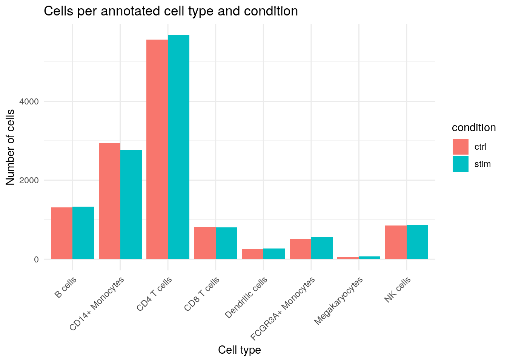

{kind=link}
suppressPackageStartupMessages({
library(zellkonverter)
library(SingleCellExperiment)
library(SummarizedExperiment)
library(CoGAPS)
library(jsonlite)
library(ggplot2)
library(dplyr)
library(tibble)
library(readr)
})Biomedical Open Case Studies: Finding latent immune-response programs in single-cell RNA-seq with CoGAPS
Disclaimer
The purpose of the Open Case Studies project is to demonstrate the use of various data science methods, tools, and software in the context of messy, real-world data. A given case study does not cover all aspects of the research process, is not claiming to be the most appropriate way to analyze a given data set, and should not be used in the context of making policy decisions without external consultation from scientific experts. In addition, due to size constraints, datasets used within a case study may be subset of the original/full dataset.
License information
This work is licensed under the Creative Commons Attribution-NonCommercial 4.0 (CC BY-NC 4.0) United States License.
This work is funded through the National Institutes of Health, specifically the National Institute of General Medical Sciences: Grant Number 1R25GM160622.
To access the GitHub repository for this case study, see opencasestudies/ocs-bio-latent-variable.
The draft data files included with this first-pass project are cached analysis objects and results derived from a processed PBMC single-cell RNA-seq dataset. The default learner path uses these cached files:
| File | Purpose |
|---|---|
data/processed/preprocessed_cells_hvg3000.h5ad |
Processed cells x genes AnnData object |
data/processed/cogaps_input_genesxcells_hvg3000_float64.h5ad |
Optional cached genes x cells CoGAPS input |
data/results_r_k6_sparse_mt_t4_heavy/cogaps_K6_seed2_iter2000.metrics.json |
Selected R K6 model metadata |
data/results_r_k6_sparse_mt_t4_heavy/pattern_gene_weights.tsv.gz |
Lightweight exported R gene-weight matrix for render-safe fallbacks |
data/results_r_k6_sparse_mt_t4_heavy/pattern_cell_activities.tsv.gz |
Lightweight exported R cell-activity matrix for render-safe fallbacks |
data/results_r_k6_sparse_mt_t4_heavy/pattern_gene_directionality_global.csv |
Targeted R directionality results for top pattern genes |
The main case-study workflow does not require a cluster. Learners can complete the case study by loading the lightweight selected R K6 pattern tables. If the full R .rds or Python .h5ad model files are available locally, the same workflow can load those larger files; otherwise the render-safe pattern tables are sufficient for the main interpretation. Running one local CoGAPS model is included as an optional exercise and may take substantial time depending on the learner’s computer.
The full SLURM sweep used to justify the chosen K is documented as optional instructor or advanced-user material in the Additional Information section.
To cite this case study, please use:
{Authors to be finalized}. {(YEAR)}. Finding latent immune-response programs in single-cell RNA-seq with CoGAPS. {Final GitHub source URL}. {Version}.
This draft case study uses the PBMC IFN-beta stimulation single-cell RNA-seq dataset from Kang et al. and introduces CoGAPS using the CoGAPS and scCoGAPS method literature. Full citation metadata should be finalized before publication.
Motivation
Single-cell RNA-seq lets us measure gene expression in thousands of individual immune cells. That resolution is powerful, but it also creates a challenge: each cell reflects both what type of cell it is and what biological processes are active inside it.
In this case study, we work with peripheral blood mononuclear cells (PBMCs) measured in control and IFN-beta stimulated conditions. IFN-beta stimulation is expected to activate interferon-stimulated genes, but the response does not happen in a vacuum. B cells, T cells, NK cells, monocytes, dendritic cells, and other PBMC populations all have their own baseline identities.
This creates a motivating question: can we find latent gene-expression programs that separate a broad stimulation response from cell-type-linked structure?
We will use CoGAPS, a Bayesian non-negative matrix factorization method, to represent the data as patterns. Each pattern has genes that define it and cells where it is active. We will then ask whether the strongest IFN-associated pattern is supported by the genes we expect, and whether those genes are up or down in stimulation.
Latent program
A hidden pattern of coordinated gene expression inferred from the data. In this case study, a latent program may reflect immune-cell identity, stimulation-associated activity, or a mixture of both.
Directionality
Whether a gene has higher or lower expression in one condition compared with another. CoGAPS pattern weights identify genes associated with a pattern, but expression direction must be estimated separately from the count data.
The figure at the top of the page previews one of the main results: a CoGAPS pattern associated with IFN-beta stimulation is active across several PBMC cell types, but the activity is not uniform. The rest of this case study shows how we get to that result, how we interpret it, and where we need to be cautious.
This dataset tests IFN-beta stimulation in PBMCs. If these genes are discussed in relation to dengue or other viral contexts, that interpretation should be framed as relevance to interferon and inflammatory biology, not as direct evidence of dengue infection in this dataset.
Main Question
Our main question(s)
- What latent transcriptional programs are present in IFN-beta stimulated and control PBMC single-cell RNA-seq data?
- Can CoGAPS help distinguish broad stimulation-associated activity from cell-type-linked immune programs?
- Which genes define the strongest IFN-associated pattern, and are those genes up or down in stimulation?
- How does the IFN-associated pattern vary across annotated PBMC cell types?
Learning Objectives
In this case study, we will use a processed single-cell RNA-seq dataset from PBMCs exposed to IFN-beta stimulation to learn how latent-variable methods can identify gene-expression programs that are not captured by cell-type labels alone.
We will load and inspect an AnnData object, prepare a CoGAPS input matrix, use the selected K = 6 model, interpret pattern activities and gene weights, and perform a targeted directionality check for genes that define the main IFN-associated pattern.
The skills, methods, and concepts that students will be familiar with by the end of this case study are:
Data Science/Bioinformatics Learning Objectives:
- Load and inspect single-cell RNA-seq data stored as an AnnData object.
- Summarize cell metadata, including condition, replicate, and cell-type annotations.
- Explain why CoGAPS uses a genes x cells input matrix and construct or load that matrix.
- Run one non-distributed chosen-
KCoGAPS model or load the saved chosen-model result. - Extract CoGAPS
AandPmatrices and connect them to gene weights and cell activities. - Generate top-gene tables, pattern activity summaries, and directionality tables.
- Create visualizations that summarize latent pattern activity across conditions and cell types.
Statistical Learning Objectives:
- Describe how latent-factor methods can represent each cell as a mixture of multiple transcriptional programs.
- Explain why rank choice matters and how
K = 6was selected from a limited sweep. - Distinguish CoGAPS pattern membership from expression directionality.
- Interpret paired pseudobulk log2 fold-change summaries for targeted pattern genes.
- Separate descriptive evidence from formal hypothesis testing and pathway validation.
Biological/Topical Learning Objectives:
- Describe the PBMC IFN-beta stimulation setting and why it is useful for studying immune-response programs.
- Identify canonical interferon-stimulated genes that anchor the main IFN-associated CoGAPS pattern.
- Compare identity-like and activity-like interpretations of latent patterns.
- Describe how the IFN-associated pattern varies across PBMC cell types.
- Explain why dengue-related interpretation, if discussed, must be framed through IFN/inflammatory relevance rather than direct infection evidence.
Packages
This case study uses R as the primary implementation and Python as a parallel secondary implementation. The R path uses SingleCellExperiment and Bioconductor CoGAPS; the Python path uses AnnData and PyCoGAPS-compatible saved outputs. The scientific workflow is the same in both languages, but saved CoGAPS outputs are kept separate because the two implementations should be treated as parallel analyses rather than numerically identical reruns.
Analysis packages
| Package | Use |
|---|---|
zellkonverter |
Read .h5ad files into SingleCellExperiment |
SingleCellExperiment |
Represent single-cell data in Bioconductor form |
SummarizedExperiment |
Access assays and metadata cleanly |
CoGAPS |
Optional local CoGAPS model execution in R |
jsonlite |
Read saved metrics JSON files |
ggplot2 |
Plot figures in the R workflow |
dplyr, tibble, readr |
Summaries and lightweight artifact I/O |
from __future__ import annotations
from pathlib import Path
import json
import platform
import sys
import anndata as ad
import matplotlib.pyplot as plt
import numpy as np
import pandas as pd
from scipy import sparse| Package | Use |
|---|---|
anndata |
Read and write AnnData .h5ad files |
pandas |
Summarize metadata, pattern tables, and directionality outputs |
numpy |
Matrix and numerical operations |
scipy |
Sparse matrix handling and statistical summaries |
matplotlib |
Plot figures used in the case study |
PyCoGAPS |
Optional local CoGAPS model execution in Python |
We will also define reusable paths and helper functions in both languages.
Reusable paths and helpers
find_project_root_r <- function(start = getwd()) {
path <- normalizePath(start, winslash = "/", mustWork = FALSE)
repeat {
if (file.exists(file.path(path, "index.qmd")) && dir.exists(file.path(path, "data"))) {
return(path)
}
parent <- dirname(path)
if (identical(parent, path)) {
stop("Could not locate the case-study project root.")
}
path <- parent
}
}
resolve_first_existing_r <- function(...) {
candidates <- c(...)
for (candidate in candidates) {
if (file.exists(candidate)) {
return(candidate)
}
}
candidates[[1]]
}
ROOT_R <- find_project_root_r()
PROCESSED_DIR_R <- file.path(ROOT_R, "data", "processed")
MODEL_SELECTION_DIR_R <- file.path(ROOT_R, "data", "model_selection")
LEGACY_RESULTS_DIR_R <- file.path(ROOT_R, "data", "results")
SELECTED_RESULTS_DIR_R <- file.path(ROOT_R, "data", "results_selected")
PY_RESULTS_DIR_R <- file.path(ROOT_R, "data", "results_python")
R_RESULTS_DIR_R <- file.path(ROOT_R, "data", "results_r")
R_K6_RESULTS_DIR_R <- file.path(ROOT_R, "data", "results_r_k6_sparse_mt_t4_heavy")
CHOSEN_K_R <- 6L
CHOSEN_SEED_R <- 2L
CHOSEN_ITER_R <- 2000L
STIM_LABEL_R <- "stim"
PREPROCESSED_H5AD_R <- file.path(PROCESSED_DIR_R, "preprocessed_cells_hvg3000.h5ad")
COGAPS_INPUT_H5AD_R <- file.path(PROCESSED_DIR_R, "cogaps_input_genesxcells_hvg3000_float64.h5ad")
PREPROCESS_CONFIG_JSON_R <- file.path(PROCESSED_DIR_R, "preprocess_config_hvg3000.json")
PHASE1_LOWERK_SUMMARY_CSV_R <- file.path(MODEL_SELECTION_DIR_R, "phase1_lowerk_summary.csv")
PHASE1B_LOWERK_LONG_SUMMARY_CSV_R <- file.path(MODEL_SELECTION_DIR_R, "phase1b_lowerk_long_summary.csv")
PHASE3_HIGHK_SUMMARY_CSV_R <- file.path(MODEL_SELECTION_DIR_R, "phase3_highk_2000_summary.csv")
CANDIDATE_PATTERN_SUMMARY_CSV_R <- file.path(MODEL_SELECTION_DIR_R, "candidate_pattern_summary.csv")
CANDIDATE_K7_ACTIVITY_MATCHES_CSV_R <- file.path(MODEL_SELECTION_DIR_R, "candidate_best_k7_activity_matches.csv")
R_CHOSEN_RESULT_RDS_R <- file.path(R_K6_RESULTS_DIR_R, "cogaps_K6_seed2_iter2000.rds")
R_CHOSEN_METRICS_JSON_R <- file.path(R_K6_RESULTS_DIR_R, "cogaps_K6_seed2_iter2000.metrics.json")
R_PATTERN_GENE_WEIGHTS_TSV_GZ_R <- file.path(R_K6_RESULTS_DIR_R, "pattern_gene_weights.tsv.gz")
R_PATTERN_CELL_ACTIVITIES_TSV_GZ_R <- file.path(R_K6_RESULTS_DIR_R, "pattern_cell_activities.tsv.gz")
R_PATTERN_CELL_ACTIVITIES_WITH_METADATA_CSV_GZ_R <- file.path(R_K6_RESULTS_DIR_R, "pattern_cell_activities_with_metadata.csv.gz")
R_PATTERN_TOP_GENES_CSV_R <- file.path(R_K6_RESULTS_DIR_R, "pattern_top_genes.csv")
R_PATTERN_CORRELATIONS_CSV_R <- file.path(R_K6_RESULTS_DIR_R, "pattern_correlations.csv")
R_PATTERN_ACTIVITY_BY_CELLTYPE_CONDITION_CSV_R <- file.path(R_K6_RESULTS_DIR_R, "pattern_activity_by_celltype_condition.csv")
R_PATTERN_ACTIVITY_BY_REPLICATE_CONDITION_CSV_R <- file.path(R_K6_RESULTS_DIR_R, "pattern_activity_by_replicate_condition.csv")
R_PATTERN_SUMMARY_CSV_R <- file.path(R_K6_RESULTS_DIR_R, "pattern_summary.csv")
R_DIRECTION_GLOBAL_CSV_R <- file.path(R_K6_RESULTS_DIR_R, "pattern_gene_directionality_global.csv")
R_DIRECTION_CELLTYPE_CSV_R <- file.path(R_K6_RESULTS_DIR_R, "pattern_gene_directionality_by_celltype.csv")
R_DIRECTION_SUMMARY_CSV_R <- file.path(R_K6_RESULTS_DIR_R, "pattern_direction_summary.csv")
PY_CHOSEN_RESULT_H5AD_R <- resolve_first_existing_r(
file.path(SELECTED_RESULTS_DIR_R, "cogaps_K6_seed2_iter2000.h5ad"),
file.path(PY_RESULTS_DIR_R, "cogaps_K7_seed2_iter2000.h5ad"),
file.path(LEGACY_RESULTS_DIR_R, "cogaps_K7_seed2_iter2000.h5ad")
)
PY_CHOSEN_METRICS_JSON_R <- resolve_first_existing_r(
file.path(SELECTED_RESULTS_DIR_R, "cogaps_K6_seed2_iter2000.metrics.json"),
file.path(PY_RESULTS_DIR_R, "cogaps_K7_seed2_iter2000.metrics.json"),
file.path(LEGACY_RESULTS_DIR_R, "cogaps_K7_seed2_iter2000.metrics.json")
)
HAS_R_CHOSEN_RESULT_R <- file.exists(R_CHOSEN_RESULT_RDS_R)
HAS_R_LIGHTWEIGHT_PATTERN_MATRICES_R <- file.exists(R_PATTERN_GENE_WEIGHTS_TSV_GZ_R) && file.exists(R_PATTERN_CELL_ACTIVITIES_TSV_GZ_R)
HAS_R_LIGHTWEIGHT_ACTIVITY_METADATA_R <- file.exists(R_PATTERN_CELL_ACTIVITIES_WITH_METADATA_CSV_GZ_R)
HAS_R_PATTERN_TOP_GENES_R <- file.exists(R_PATTERN_TOP_GENES_CSV_R)
HAS_R_PATTERN_CORRELATIONS_R <- file.exists(R_PATTERN_CORRELATIONS_CSV_R)
HAS_R_PATTERN_ACTIVITY_BY_CELLTYPE_R <- file.exists(R_PATTERN_ACTIVITY_BY_CELLTYPE_CONDITION_CSV_R)
HAS_R_PATTERN_SUMMARY_R <- file.exists(R_PATTERN_SUMMARY_CSV_R)
R_ANALYSIS_MODE_R <- if (HAS_R_CHOSEN_RESULT_R) {
"full_chosen_result"
} else if (HAS_R_LIGHTWEIGHT_PATTERN_MATRICES_R) {
"lightweight_derived"
} else {
"unavailable"
}
pattern_columns_r <- function(x) {
pats <- grep("^Pattern_?[0-9]+$", x, value = TRUE)
pats[order(as.integer(sub("^Pattern_?", "", pats)))]
}
canonicalize_pattern_names_r <- function(x) {
sub("^Pattern_?([0-9]+)$", "Pattern\\1", x)
}
top_genes_from_matrix_r <- function(matrix, pattern, n = 15) {
ordered <- sort(matrix[, pattern], decreasing = TRUE)
ordered <- head(ordered, n)
tibble::tibble(
gene = names(ordered),
weight = unname(ordered)
)
}
load_lightweight_pattern_matrices_r <- function(weights_path, activities_path) {
A <- readr::read_tsv(weights_path, show_col_types = FALSE) |>
tibble::column_to_rownames("gene") |>
as.data.frame(check.names = FALSE)
P <- readr::read_tsv(activities_path, show_col_types = FALSE) |>
tibble::column_to_rownames("cell_barcode") |>
as.data.frame(check.names = FALSE)
colnames(A) <- canonicalize_pattern_names_r(colnames(A))
colnames(P) <- canonicalize_pattern_names_r(colnames(P))
list(A = A, P = P)
}def find_project_root(start: Path) -> Path:
for path in [start, *start.parents]:
if (path / "index.qmd").exists() and (path / "data").exists():
return path
raise FileNotFoundError("Could not locate the case-study project root.")
def resolve_first_existing(*candidates: Path) -> Path:
for candidate in candidates:
if candidate.exists():
return candidate
return candidates[0]
ROOT = find_project_root(Path.cwd())
PROCESSED_DIR = ROOT / "data" / "processed"
MODEL_SELECTION_DIR = ROOT / "data" / "model_selection"
LEGACY_RESULTS_DIR = ROOT / "data" / "results"
SELECTED_RESULTS_DIR = ROOT / "data" / "results_selected"
PY_RESULTS_DIR = ROOT / "data" / "results_python"
R_RESULTS_DIR = ROOT / "data" / "results_r"
R_K6_RESULTS_DIR = ROOT / "data" / "results_r_k6_sparse_mt_t4_heavy"
PREPROCESSED_H5AD = PROCESSED_DIR / "preprocessed_cells_hvg3000.h5ad"
COGAPS_INPUT_H5AD = PROCESSED_DIR / "cogaps_input_genesxcells_hvg3000_float64.h5ad"
PREPROCESS_CONFIG_JSON = PROCESSED_DIR / "preprocess_config_hvg3000.json"
PY_CHOSEN_RESULT_H5AD = resolve_first_existing(
SELECTED_RESULTS_DIR / "cogaps_K6_seed2_iter2000.h5ad",
PY_RESULTS_DIR / "cogaps_K7_seed2_iter2000.h5ad",
LEGACY_RESULTS_DIR / "cogaps_K7_seed2_iter2000.h5ad",
)
PY_CHOSEN_METRICS_JSON = resolve_first_existing(
SELECTED_RESULTS_DIR / "cogaps_K6_seed2_iter2000.metrics.json",
PY_RESULTS_DIR / "cogaps_K7_seed2_iter2000.metrics.json",
LEGACY_RESULTS_DIR / "cogaps_K7_seed2_iter2000.metrics.json",
)
PY_SUMMARY_BY_K_CSV = resolve_first_existing(
MODEL_SELECTION_DIR / "phase1b_lowerk_long_summary.csv",
PY_RESULTS_DIR / "summary_by_K.csv",
LEGACY_RESULTS_DIR / "summary_by_K.csv",
)
PHASE1_LOWERK_SUMMARY_CSV = MODEL_SELECTION_DIR / "phase1_lowerk_summary.csv"
PHASE1B_LOWERK_LONG_SUMMARY_CSV = MODEL_SELECTION_DIR / "phase1b_lowerk_long_summary.csv"
PHASE3_HIGHK_SUMMARY_CSV = MODEL_SELECTION_DIR / "phase3_highk_2000_summary.csv"
CANDIDATE_PATTERN_SUMMARY_CSV = MODEL_SELECTION_DIR / "candidate_pattern_summary.csv"
CANDIDATE_K7_ACTIVITY_MATCHES_CSV = MODEL_SELECTION_DIR / "candidate_best_k7_activity_matches.csv"
PY_PER_RUN_METRICS_CSV = resolve_first_existing(
PY_RESULTS_DIR / "per_run_metrics.csv",
LEGACY_RESULTS_DIR / "per_run_metrics.csv",
)
PY_DIRECTION_GLOBAL_CSV = resolve_first_existing(
SELECTED_RESULTS_DIR / "pattern_gene_directionality_global.csv",
PY_RESULTS_DIR / "pattern_gene_directionality_global.csv",
LEGACY_RESULTS_DIR / "pattern_gene_directionality_global.csv",
)
PY_DIRECTION_CELLTYPE_CSV = resolve_first_existing(
SELECTED_RESULTS_DIR / "pattern_gene_directionality_by_celltype.csv",
PY_RESULTS_DIR / "pattern_gene_directionality_by_celltype.csv",
LEGACY_RESULTS_DIR / "pattern_gene_directionality_by_celltype.csv",
)
PY_DIRECTION_SUMMARY_CSV = resolve_first_existing(
SELECTED_RESULTS_DIR / "pattern_direction_summary.csv",
PY_RESULTS_DIR / "pattern_direction_summary.csv",
LEGACY_RESULTS_DIR / "pattern_direction_summary.csv",
)
PY_PATTERN_GENE_WEIGHTS_TSV_GZ = resolve_first_existing(
SELECTED_RESULTS_DIR / "pattern_gene_weights.tsv.gz",
PY_RESULTS_DIR / "pattern_gene_weights.tsv.gz",
LEGACY_RESULTS_DIR / "pattern_gene_weights.tsv.gz",
)
PY_PATTERN_CELL_ACTIVITIES_TSV_GZ = resolve_first_existing(
SELECTED_RESULTS_DIR / "pattern_cell_activities.tsv.gz",
PY_RESULTS_DIR / "pattern_cell_activities.tsv.gz",
LEGACY_RESULTS_DIR / "pattern_cell_activities.tsv.gz",
)
PY_PATTERN_CELL_ACTIVITIES_WITH_METADATA_CSV_GZ = resolve_first_existing(
SELECTED_RESULTS_DIR / "pattern_cell_activities_with_metadata.csv.gz",
PY_RESULTS_DIR / "pattern_cell_activities_with_metadata.csv.gz",
LEGACY_RESULTS_DIR / "pattern_cell_activities_with_metadata.csv.gz",
)
PY_PATTERN_TOP_GENES_CSV = resolve_first_existing(
SELECTED_RESULTS_DIR / "pattern_top_genes.csv",
PY_RESULTS_DIR / "pattern_top_genes.csv",
LEGACY_RESULTS_DIR / "pattern_top_genes.csv",
)
PY_PATTERN_CORRELATIONS_CSV = resolve_first_existing(
SELECTED_RESULTS_DIR / "pattern_correlations.csv",
PY_RESULTS_DIR / "pattern_correlations.csv",
LEGACY_RESULTS_DIR / "pattern_correlations.csv",
)
PY_PATTERN_ACTIVITY_BY_CELLTYPE_CONDITION_CSV = resolve_first_existing(
SELECTED_RESULTS_DIR / "pattern_activity_by_celltype_condition.csv",
PY_RESULTS_DIR / "pattern_activity_by_celltype_condition.csv",
LEGACY_RESULTS_DIR / "pattern_activity_by_celltype_condition.csv",
)
PY_PATTERN_ACTIVITY_BY_REPLICATE_CONDITION_CSV = resolve_first_existing(
SELECTED_RESULTS_DIR / "pattern_activity_by_replicate_condition.csv",
PY_RESULTS_DIR / "pattern_activity_by_replicate_condition.csv",
LEGACY_RESULTS_DIR / "pattern_activity_by_replicate_condition.csv",
)
PY_PATTERN_SUMMARY_CSV = resolve_first_existing(
SELECTED_RESULTS_DIR / "pattern_summary.csv",
PY_RESULTS_DIR / "pattern_summary.csv",
LEGACY_RESULTS_DIR / "pattern_summary.csv",
)
R_CHOSEN_RESULT_RDS = R_K6_RESULTS_DIR / "cogaps_K6_seed2_iter2000.rds"
R_CHOSEN_METRICS_JSON = R_K6_RESULTS_DIR / "cogaps_K6_seed2_iter2000.metrics.json"
R_PATTERN_GENE_WEIGHTS_TSV_GZ = R_K6_RESULTS_DIR / "pattern_gene_weights.tsv.gz"
R_PATTERN_CELL_ACTIVITIES_TSV_GZ = R_K6_RESULTS_DIR / "pattern_cell_activities.tsv.gz"
R_PATTERN_CELL_ACTIVITIES_WITH_METADATA_CSV_GZ = R_K6_RESULTS_DIR / "pattern_cell_activities_with_metadata.csv.gz"
R_PATTERN_TOP_GENES_CSV = R_K6_RESULTS_DIR / "pattern_top_genes.csv"
R_PATTERN_CORRELATIONS_CSV = R_K6_RESULTS_DIR / "pattern_correlations.csv"
R_PATTERN_ACTIVITY_BY_CELLTYPE_CONDITION_CSV = R_K6_RESULTS_DIR / "pattern_activity_by_celltype_condition.csv"
R_PATTERN_ACTIVITY_BY_REPLICATE_CONDITION_CSV = R_K6_RESULTS_DIR / "pattern_activity_by_replicate_condition.csv"
R_PATTERN_SUMMARY_CSV = R_K6_RESULTS_DIR / "pattern_summary.csv"
R_DIRECTION_GLOBAL_CSV = R_K6_RESULTS_DIR / "pattern_gene_directionality_global.csv"
R_DIRECTION_CELLTYPE_CSV = R_K6_RESULTS_DIR / "pattern_gene_directionality_by_celltype.csv"
R_DIRECTION_SUMMARY_CSV = R_K6_RESULTS_DIR / "pattern_direction_summary.csv"
CHOSEN_K = 6
CHOSEN_SEED = 2
CHOSEN_ITER = 2000
STIM_LABEL = "stim"
HAS_CACHED_COGAPS_INPUT = COGAPS_INPUT_H5AD.exists()
HAS_PY_CHOSEN_RESULT = PY_CHOSEN_RESULT_H5AD.exists()
HAS_PY_LIGHTWEIGHT_PATTERN_MATRICES = (
PY_PATTERN_GENE_WEIGHTS_TSV_GZ.exists() and PY_PATTERN_CELL_ACTIVITIES_TSV_GZ.exists()
)
HAS_PY_LIGHTWEIGHT_ACTIVITY_METADATA = PY_PATTERN_CELL_ACTIVITIES_WITH_METADATA_CSV_GZ.exists()
HAS_PY_PATTERN_TOP_GENES = PY_PATTERN_TOP_GENES_CSV.exists()
HAS_PY_PATTERN_CORRELATIONS = PY_PATTERN_CORRELATIONS_CSV.exists()
HAS_PY_PATTERN_ACTIVITY_BY_CELLTYPE = PY_PATTERN_ACTIVITY_BY_CELLTYPE_CONDITION_CSV.exists()
HAS_PY_PATTERN_SUMMARY = PY_PATTERN_SUMMARY_CSV.exists()
HAS_R_CHOSEN_RESULT = R_CHOSEN_RESULT_RDS.exists()
HAS_R_LIGHTWEIGHT_PATTERN_MATRICES = (
R_PATTERN_GENE_WEIGHTS_TSV_GZ.exists() and R_PATTERN_CELL_ACTIVITIES_TSV_GZ.exists()
)
HAS_R_LIGHTWEIGHT_ACTIVITY_METADATA = R_PATTERN_CELL_ACTIVITIES_WITH_METADATA_CSV_GZ.exists()
HAS_R_PATTERN_TOP_GENES = R_PATTERN_TOP_GENES_CSV.exists()
HAS_R_PATTERN_CORRELATIONS = R_PATTERN_CORRELATIONS_CSV.exists()
HAS_R_PATTERN_ACTIVITY_BY_CELLTYPE = R_PATTERN_ACTIVITY_BY_CELLTYPE_CONDITION_CSV.exists()
HAS_R_PATTERN_SUMMARY = R_PATTERN_SUMMARY_CSV.exists()
PY_ANALYSIS_MODE = (
"full_chosen_result"
if HAS_PY_CHOSEN_RESULT
else "lightweight_derived"
if HAS_PY_LIGHTWEIGHT_PATTERN_MATRICES
else "unavailable"
)
R_ANALYSIS_MODE = (
"full_chosen_result"
if HAS_R_CHOSEN_RESULT
else "lightweight_derived"
if HAS_R_LIGHTWEIGHT_PATTERN_MATRICES
else "unavailable"
)
# Backward-compatible aliases used by the Python chunks below.
CHOSEN_RESULT_H5AD = PY_CHOSEN_RESULT_H5AD
CHOSEN_METRICS_JSON = PY_CHOSEN_METRICS_JSON
SUMMARY_BY_K_CSV = PY_SUMMARY_BY_K_CSV
PER_RUN_METRICS_CSV = PY_PER_RUN_METRICS_CSV
DIRECTION_GLOBAL_CSV = PY_DIRECTION_GLOBAL_CSV
DIRECTION_CELLTYPE_CSV = PY_DIRECTION_CELLTYPE_CSV
DIRECTION_SUMMARY_CSV = PY_DIRECTION_SUMMARY_CSV
PATTERN_GENE_WEIGHTS_TSV_GZ = PY_PATTERN_GENE_WEIGHTS_TSV_GZ
PATTERN_CELL_ACTIVITIES_TSV_GZ = PY_PATTERN_CELL_ACTIVITIES_TSV_GZ
PATTERN_CELL_ACTIVITIES_WITH_METADATA_CSV_GZ = PY_PATTERN_CELL_ACTIVITIES_WITH_METADATA_CSV_GZ
PATTERN_TOP_GENES_CSV = PY_PATTERN_TOP_GENES_CSV
PATTERN_CORRELATIONS_CSV = PY_PATTERN_CORRELATIONS_CSV
PATTERN_ACTIVITY_BY_CELLTYPE_CONDITION_CSV = PY_PATTERN_ACTIVITY_BY_CELLTYPE_CONDITION_CSV
PATTERN_ACTIVITY_BY_REPLICATE_CONDITION_CSV = PY_PATTERN_ACTIVITY_BY_REPLICATE_CONDITION_CSV
PATTERN_SUMMARY_CSV = PY_PATTERN_SUMMARY_CSV
ANALYSIS_MODE = PY_ANALYSIS_MODE
def pattern_columns(df: pd.DataFrame) -> list[str]:
return sorted(
[c for c in df.columns if str(c).startswith("Pattern")],
key=lambda value: int(str(value).replace("Pattern", "")),
)
def top_genes_from_matrix(matrix: pd.DataFrame, pattern: str, n: int = 15) -> pd.DataFrame:
top = matrix[pattern].sort_values(ascending=False).head(n)
top_df = top.rename("weight").reset_index()
top_df.columns = ["gene", "weight"]
return top_df
def load_lightweight_pattern_matrices(weights_path: Path, activities_path: Path) -> tuple[pd.DataFrame, pd.DataFrame]:
A = pd.read_csv(weights_path, sep="\t", compression="gzip").set_index("gene")
P = pd.read_csv(activities_path, sep="\t", compression="gzip").set_index("cell_barcode")
return A, P
def build_cogaps_input(preprocessed_cells: ad.AnnData) -> ad.AnnData:
cogaps_input = preprocessed_cells.T.copy()
X = cogaps_input.X.toarray() if sparse.issparse(cogaps_input.X) else cogaps_input.X
cogaps_input.X = np.asarray(X, dtype=np.float64)
cogaps_input.var = preprocessed_cells.obs.copy()
cogaps_input.var_names = preprocessed_cells.obs_names.copy()
cogaps_input.obs = preprocessed_cells.var.copy()
cogaps_input.obs_names = preprocessed_cells.var_names.copy()
return cogaps_inputContext
PBMCs and IFN-beta stimulation
Peripheral blood mononuclear cells are a mixture of immune cell types, including T cells, B cells, NK cells, monocytes, dendritic cells, and other populations. When PBMCs are exposed to IFN-beta, many cells are expected to activate interferon-stimulated genes. However, those cells do not stop being T cells, B cells, monocytes, or dendritic cells.
This means that a single-cell RNA-seq experiment contains multiple layers of structure at the same time:
- stable immune-cell identity
- stimulation-associated activity
- donor and technical variation
- gene programs shared across several cell types
The dataset used here comes from a published PBMC perturbation study in which cells from eight lupus patients were profiled in control and IFN-beta stimulated conditions. The original study reported broad stimulation-associated transcriptional responses as well as cell-type-specific response structure.
Why latent-variable analysis?
Clustering is useful for identifying groups of similar cells, but clustering alone can make it difficult to study biological programs shared across several cell types. A stimulation response can cut across cell-type boundaries. A latent-variable model gives us another view: instead of assigning each cell to one group, we can represent each cell as a mixture of patterns.
Identity-like and activity-like programs
An identity-like program is strongly tied to a cell type or compartment. An activity-like program reflects a biological process that can be active across multiple cell types, such as a stimulation response.
What does CoGAPS do?
CoGAPS is a Bayesian non-negative matrix factorization method. In this case study, we use it to decompose a genes x cells expression matrix into two linked matrices:
CoGAPS A matrix
The gene-by-pattern matrix. Larger values indicate genes that contribute more strongly to a pattern.
CoGAPS P matrix
The pattern-by-cell matrix. Larger values indicate cells with stronger activity for a pattern.
In this case study, the most important signal is the IFN-associated pattern. In the selected R K6 result, that pattern is labeled Pattern4; in the secondary Python K6 result, the corresponding signal is labeled Pattern5. The label itself is run-specific, so we focus on the pattern’s activity, top genes, and directionality rather than treating one pattern number as universal.
What are the data?
We will use a processed subset of the PBMC IFN-beta stimulation single-cell RNA-seq dataset from Kang et al. The student-facing analysis object contains 24,673 cells and 3,000 highly variable genes. Each cell has metadata for condition, annotated cell type, and donor/replicate.
| Object or variable | Details |
|---|---|
preprocessed_cells_hvg3000.h5ad |
Cells x genes AnnData object used for the main learner workflow |
condition |
Experimental condition: ctrl or stim |
cell_type |
Annotated PBMC cell type |
replicate |
Donor or patient replicate label |
.layers["counts"] |
Count layer used for targeted pseudobulk directionality |
cogaps_input_genesxcells_hvg3000_float64.h5ad |
Optional genes x cells matrix prepared for Python/PyCoGAPS full local runs |
data/results_r_k6_sparse_mt_t4_heavy/cogaps_K6_seed2_iter2000.metrics.json |
Selected R K6 sparse-on model metadata |
data/results_r_k6_sparse_mt_t4_heavy/pattern_gene_weights.tsv.gz |
Lightweight exported R CoGAPS gene-weight (A) matrix |
data/results_r_k6_sparse_mt_t4_heavy/pattern_cell_activities.tsv.gz |
Lightweight exported R CoGAPS cell-activity (P) matrix |
pattern_cell_activities_with_metadata.csv.gz |
Cell-level pattern activities joined to key metadata and embeddings |
pattern_top_genes.csv |
Top weighted genes per pattern from the chosen model |
pattern_correlations.csv |
Pattern correlations with the stimulation indicator |
pattern_activity_by_celltype_condition.csv |
Mean and median pattern activity summaries by cell type and condition |
pattern_summary.csv |
Compact per-pattern interpretation table for lightweight renders |
pattern_gene_directionality_global.csv |
Targeted global stim-vs-ctrl directionality for top pattern genes |
pattern_gene_directionality_by_celltype.csv |
Targeted cell-type directionality for top pattern genes |
The local processed object is sparse: about 96 percent of entries are zero. This is typical for single-cell RNA-seq and is one reason that careful preprocessing and interpretation are important.
The case study starts from cached files so learners can focus on latent-variable analysis and interpretation rather than full raw-data processing. For GitHub and other lightweight render contexts, the smaller exported pattern tables allow most of the biological interpretation to remain available even when full model objects such as the R .rds or Python .h5ad files are absent.
Limitations
There are some important considerations regarding this data analysis to keep in mind:
- This case study uses a processed AnnData object with 3,000 highly variable genes rather than a full workflow from raw sequencing files or all measured genes.
- The chosen CoGAPS rank,
K = 6, comes from a limited completed sweep and should be described as a local model-selection decision rather than a universal optimum. - The main learner workflow loads a saved chosen model by default because running even one CoGAPS model can take substantial time.
- CoGAPS pattern weights identify genes associated with latent programs, but up/down regulation must be assessed separately using expression contrasts.
- The directionality analysis is targeted to top pattern genes and is not a genome-wide differential-expression analysis.
- Cell-type heterogeneity summaries are descriptive unless additional donor-aware inference is added.
- The dataset tests IFN-beta stimulation in PBMCs, not direct dengue infection.
Ethical Considerations
There are some important ethical considerations when working with data relating to this case study’s main questions.
- These data come from human immune cells, so learners should treat donor metadata carefully even when the dataset is public and de-identified.
- Public case-study repositories should not include protected health information or unnecessary sensitive metadata.
- Reproducible workflows improve transparency, but they also make it important to document what data were processed, subset, or cached.
- This case study is educational and should not be used for clinical decision-making.
The processed files in this draft project use donor or patient replicate labels only for analysis structure. We will not attempt to infer private donor attributes from these labels.
Data Import
We will start from a cached processed single-cell object. This keeps the focus of the case study on latent-variable analysis and interpretation rather than on rebuilding every preprocessing step from the original source files.
sce_cells <- zellkonverter::readH5AD(PREPROCESSED_H5AD_R, reader = "R")
sce_cellsclass: SingleCellExperiment
dim: 3000 24673
metadata(2): hvg log1p
assays(2): X counts
rownames(3000): HES4 ISG15 ... SLC19A1 S100B
rowData names(7): name n_cells ... variances variances_norm
colnames(24673): AAACATACATTTCC-1 AAACATACCAGAAA-1 ... TTTGCATGGGACGA-2
TTTGCATGTCTTAC-2
colData names(13): nCount_RNA nFeature_RNA ... seurat_clusters
condition
reducedDimNames(2): X_pca X_umap
mainExpName: NULL
altExpNames(0):adata_cells = ad.read_h5ad(PREPROCESSED_H5AD)
adata_cellsAnnData object with n_obs × n_vars = 24673 × 3000
obs: 'nCount_RNA', 'nFeature_RNA', 'tsne1', 'tsne2', 'label', 'cluster', 'cell_type', 'replicate', 'nCount_SCT', 'nFeature_SCT', 'integrated_snn_res.0.4', 'seurat_clusters', 'condition'
var: 'name', 'n_cells', 'highly_variable', 'highly_variable_rank', 'means', 'variances', 'variances_norm'
uns: 'hvg', 'log1p'
obsm: 'X_pca', 'X_umap'
layers: 'counts'We need three metadata columns for the rest of the case study:
condition, so we can compare control and IFN-beta stimulated cellscell_type, so we can summarize patterns across immune compartmentsreplicate, so we can perform paired donor-aware summaries
required_obs_r <- c("condition", "cell_type", "replicate")
missing_obs_r <- setdiff(required_obs_r, colnames(colData(sce_cells)))
if (length(missing_obs_r) > 0) {
stop(sprintf("Missing required metadata columns: %s", paste(missing_obs_r, collapse = ", ")))
}
as.data.frame(colData(sce_cells)[, required_obs_r]) |>
head() condition cell_type replicate
AAACATACATTTCC-1 ctrl CD14+ Monocytes patient_1016
AAACATACCAGAAA-1 ctrl CD14+ Monocytes patient_1256
AAACATACCATGCA-1 ctrl CD4 T cells patient_1488
AAACATACCTCGCT-1 ctrl CD14+ Monocytes patient_1256
AAACATACCTGGTA-1 ctrl Dendritic cells patient_1039
AAACATACGATGAA-1 ctrl CD4 T cells patient_1488required_obs = {"condition", "cell_type", "replicate"}
missing_obs = required_obs.difference(adata_cells.obs.columns)
if missing_obs:
raise ValueError(f"Missing required metadata columns: {sorted(missing_obs)}")
adata_cells.obs[["condition", "cell_type", "replicate"]].head() condition cell_type replicate
index
AAACATACATTTCC-1 ctrl CD14+ Monocytes patient_1016
AAACATACCAGAAA-1 ctrl CD14+ Monocytes patient_1256
AAACATACCATGCA-1 ctrl CD4 T cells patient_1488
AAACATACCTCGCT-1 ctrl CD14+ Monocytes patient_1256
AAACATACCTGGTA-1 ctrl Dendritic cells patient_1039The default path in this case study uses saved R-primary CoGAPS artifacts. If the full R result is available, the case study can load it directly; otherwise it uses lightweight exported matrices and summaries that are suitable for GitHub and classroom rendering. The Python implementation follows the same cooking-show pattern in the secondary tab: full .h5ad support is preserved for local review, but lightweight Python exports are sufficient when that larger file is absent.
cat("R analysis mode:", R_ANALYSIS_MODE_R, "\n")R analysis mode: lightweight_derived cat("R full chosen model available:", HAS_R_CHOSEN_RESULT_R, "\n")R full chosen model available: FALSE cat("R chosen model metrics available:", file.exists(R_CHOSEN_METRICS_JSON_R), "\n")R chosen model metrics available: TRUE cat("R lightweight pattern matrices available:", HAS_R_LIGHTWEIGHT_PATTERN_MATRICES_R, "\n")R lightweight pattern matrices available: TRUE cat("R lightweight pattern summary available:", HAS_R_PATTERN_SUMMARY_R, "\n")R lightweight pattern summary available: TRUE print("Python analysis mode:", PY_ANALYSIS_MODE)Python analysis mode: lightweight_derivedprint("Python full chosen model available:", HAS_PY_CHOSEN_RESULT)Python full chosen model available: Falseprint("Cached dense CoGAPS input available:", HAS_CACHED_COGAPS_INPUT)Cached dense CoGAPS input available: Falseprint("Python chosen model metrics available:", PY_CHOSEN_METRICS_JSON.exists())Python chosen model metrics available: Trueprint("Python lightweight pattern matrices available:", HAS_PY_LIGHTWEIGHT_PATTERN_MATRICES)Python lightweight pattern matrices available: Trueprint("Python lightweight pattern summary available:", HAS_PY_PATTERN_SUMMARY)Python lightweight pattern summary available: TrueData Exploration
Before running or interpreting a model, we should inspect what is in the processed single-cell object.
cat("Shape:", paste(dim(sce_cells), collapse = " x "), "\n")Shape: 3000 x 24673 cat("colData columns:", paste(colnames(colData(sce_cells)), collapse = ", "), "\n")colData columns: nCount_RNA, nFeature_RNA, tsne1, tsne2, label, cluster, cell_type, replicate, nCount_SCT, nFeature_SCT, integrated_snn_res.0.4, seurat_clusters, condition cat("rowData columns:", paste(colnames(rowData(sce_cells)), collapse = ", "), "\n")rowData columns: name, n_cells, highly_variable, highly_variable_rank, means, variances, variances_norm cat("Assays:", paste(assayNames(sce_cells), collapse = ", "), "\n")Assays: X, counts print("Shape:", adata_cells.shape)Shape: (24673, 3000)print("Observation columns:", list(adata_cells.obs.columns))Observation columns: ['nCount_RNA', 'nFeature_RNA', 'tsne1', 'tsne2', 'label', 'cluster', 'cell_type', 'replicate', 'nCount_SCT', 'nFeature_SCT', 'integrated_snn_res.0.4', 'seurat_clusters', 'condition']print("Variable columns:", list(adata_cells.var.columns))Variable columns: ['name', 'n_cells', 'highly_variable', 'highly_variable_rank', 'means', 'variances', 'variances_norm']print("Layers:", list(adata_cells.layers.keys()))Layers: ['counts']The object has genes as rows and cells as columns in the R SingleCellExperiment representation. That is the orientation expected by the R CoGAPS workflow. In the Python AnnData representation, the same processed object is cells by genes, so the Python CoGAPS input must be transposed before model fitting.
Condition and cell-type summaries
condition_counts_r <- as.data.frame(table(colData(sce_cells)$condition), stringsAsFactors = FALSE)
colnames(condition_counts_r) <- c("condition", "n_cells")
condition_counts_r[order(condition_counts_r$n_cells, decreasing = TRUE), ] condition n_cells
2 stim 12358
1 ctrl 12315celltype_counts_r <- as.data.frame(table(colData(sce_cells)$cell_type), stringsAsFactors = FALSE)
colnames(celltype_counts_r) <- c("cell_type", "n_cells")
celltype_counts_r[order(celltype_counts_r$n_cells, decreasing = TRUE), ] cell_type n_cells
1 CD4 T cells 11238
2 CD14+ Monocytes 5697
3 B cells 2651
4 NK cells 1716
5 CD8 T cells 1621
6 FCGR3A+ Monocytes 1089
7 Dendritic cells 529
8 Megakaryocytes 132condition_counts = (
adata_cells.obs["condition"]
.value_counts()
.rename_axis("condition")
.reset_index(name="n_cells")
)
celltype_counts = (
adata_cells.obs["cell_type"]
.value_counts()
.rename_axis("cell_type")
.reset_index(name="n_cells")
)
condition_counts condition n_cells
0 stim 12358
1 ctrl 12315celltype_counts cell_type n_cells
0 CD4 T cells 11238
1 CD14+ Monocytes 5697
2 B cells 2651
3 NK cells 1716
4 CD8 T cells 1621
5 FCGR3A+ Monocytes 1089
6 Dendritic cells 529
7 Megakaryocytes 132We can also check whether every donor or replicate has cells in both conditions.
table(colData(sce_cells)$replicate, colData(sce_cells)$condition)
ctrl stim
patient_101 858 1166
patient_107 517 525
patient_1015 2738 2352
patient_1016 1723 1635
patient_1039 461 641
patient_1244 1879 1464
patient_1256 2108 2026
patient_1488 2031 2549pd.crosstab(adata_cells.obs["replicate"], adata_cells.obs["condition"])condition ctrl stim
replicate
patient_101 858 1166
patient_107 517 525
patient_1015 2738 2352
patient_1016 1723 1635
patient_1039 461 641
patient_1244 1879 1464
patient_1256 2108 2026
patient_1488 2031 2549Sparsity
Single-cell RNA-seq matrices often contain many zeros. We can measure sparsity directly.
X_r <- assay(sce_cells, "X")
nnz_r <- if (inherits(X_r, "sparseMatrix")) Matrix::nnzero(X_r) else sum(X_r != 0)
total_r <- nrow(sce_cells) * ncol(sce_cells)
sparsity_r <- 1 - (nnz_r / total_r)
cat("Nonzero entries:", format(nnz_r, big.mark = ","), "\n")Nonzero entries: 2,916,846 cat("Total entries:", format(total_r, big.mark = ","), "\n")Total entries: 74,019,000 cat(sprintf("Sparsity: %.4f%%\n", 100 * sparsity_r))Sparsity: 96.0593%X = adata_cells.X
nnz = X.nnz if sparse.issparse(X) else np.count_nonzero(X)
total = adata_cells.n_obs * adata_cells.n_vars
sparsity = 1 - (nnz / total)
print(f"Nonzero entries: {nnz:,}")Nonzero entries: 2,916,846print(f"Total entries: {total:,}")Total entries: 74,019,000print(f"Sparsity: {sparsity:.4%}")Sparsity: 96.0593%The processed object is about 96 percent zeros. This sparse structure is one reason that we use methods designed for high-dimensional single-cell data and interpret individual genes carefully.
Data Wrangling
The processed object was generated before this case study. The frozen preprocessing steps include filtering genes by minimum cell count, library-size normalization, log transformation, and selection of 3,000 highly variable genes.
preprocess_config_r <- jsonlite::read_json(PREPROCESS_CONFIG_JSON_R, simplifyVector = TRUE)
preprocess_config_r$raw_h5ad
[1] "kang_counts_25k.h5ad"
$min_cells
[1] 3
$target_sum
[1] 10000
$hvg_flavor
[1] "seurat_v3"
$n_top_genes
[1] 3000
$created_at
[1] "2026-02-22T14:25:58"with open(PREPROCESS_CONFIG_JSON) as f:
preprocess_config = json.load(f)
preprocess_config{'raw_h5ad': 'kang_counts_25k.h5ad', 'min_cells': 3, 'target_sum': 10000.0, 'hvg_flavor': 'seurat_v3', 'n_top_genes': 3000, 'created_at': '2026-02-22T14:25:58'}Preparing a CoGAPS input
In the primary R workflow, zellkonverter::readH5AD() imports the processed .h5ad into a SingleCellExperiment with genes in rows and cells in columns. That means the matrix is already in the orientation expected by Bioconductor CoGAPS.
cogaps_input_r <- assay(sce_cells, "X")
cat("R CoGAPS input shape (genes x cells):", paste(dim(cogaps_input_r), collapse = " x "), "\n")R CoGAPS input shape (genes x cells): 3000 x 24673 # If you want an explicit dense matrix object for a full local R CoGAPS run:
cogaps_input_dense_r <- as.matrix(assay(sce_cells, "X"))
storage.mode(cogaps_input_dense_r) <- "double"if HAS_CACHED_COGAPS_INPUT:
cogaps_input = ad.read_h5ad(COGAPS_INPUT_H5AD)
cogaps_input
else:
cogaps_input = None
print("Cached dense CoGAPS input not available in this render context.")
print("Expected genes x cells shape:", (adata_cells.n_vars, adata_cells.n_obs))Cached dense CoGAPS input not available in this render context.
Expected genes x cells shape: (3000, 24673)cogaps_input_from_cells = build_cogaps_input(adata_cells)
cogaps_input_from_cells.write_h5ad(COGAPS_INPUT_H5AD)if cogaps_input is not None:
assert cogaps_input.n_obs == adata_cells.n_vars
assert cogaps_input.n_vars == adata_cells.n_obs
print("CoGAPS input shape:", cogaps_input.shape)
else:
print("Skipping dense input validation because the cached genes x cells file is absent.")Skipping dense input validation because the cached genes x cells file is absent.Question opportunity
Why do we need to track matrix orientation carefully across Python and R?
Answer
Because the meaning of rows and columns changes across data structures. In RSingleCellExperiment, genes live in rows and cells in columns, so the imported matrix is already aligned to the CoGAPS expectation. In Python AnnData, the processed object is cells x genes, so we transpose to get the genes x cells matrix used by CoGAPS.
Data Visualization
Visualizations help us check the structure of the dataset before interpreting model results.
Cell types by condition
celltype_condition_r <- as.data.frame(table(
cell_type = colData(sce_cells)$cell_type,
condition = colData(sce_cells)$condition
), stringsAsFactors = FALSE)
colnames(celltype_condition_r) <- c("cell_type", "condition", "n_cells")
head(celltype_condition_r) cell_type condition n_cells
1 CD4 T cells ctrl 5560
2 CD14+ Monocytes ctrl 2932
3 B cells ctrl 1316
4 NK cells ctrl 855
5 CD8 T cells ctrl 811
6 FCGR3A+ Monocytes ctrl 520ggplot(celltype_condition_r, aes(x = cell_type, y = n_cells, fill = condition)) +
geom_col(position = "dodge") +
labs(
title = "Cells per annotated cell type and condition",
x = "Cell type",
y = "Number of cells"
) +
theme_minimal(base_size = 11) +
theme(axis.text.x = element_text(angle = 45, hjust = 1))
celltype_condition = (
adata_cells.obs.groupby(["cell_type", "condition"], observed=True)
.size()
.reset_index(name="n_cells")
)
celltype_condition.head() cell_type condition n_cells
0 CD4 T cells ctrl 5560
1 CD4 T cells stim 5678
2 CD14+ Monocytes ctrl 2932
3 CD14+ Monocytes stim 2765
4 B cells ctrl 1316pivot_counts = (
celltype_condition
.pivot(index="cell_type", columns="condition", values="n_cells")
.fillna(0)
.sort_values(by=["ctrl", "stim"], ascending=False)
)
ax = pivot_counts.plot(kind="bar", figsize=(9, 4))
ax.set_ylabel("Number of cells")
ax.set_xlabel("Cell type")
ax.set_title("Cells per annotated cell type and condition")
plt.xticks(rotation=45, ha="right")(array([0, 1, 2, 3, 4, 5, 6, 7]), [Text(0, 0, 'CD4 T cells'), Text(1, 0, 'CD14+ Monocytes'), Text(2, 0, 'B cells'), Text(3, 0, 'NK cells'), Text(4, 0, 'CD8 T cells'), Text(5, 0, 'FCGR3A+ Monocytes'), Text(6, 0, 'Dendritic cells'), Text(7, 0, 'Megakaryocytes')])plt.tight_layout()
plt.show()
The conditions are nearly balanced overall and within major cell types. That makes it easier to compare pattern activity between control and stimulated cells, although donor-aware summaries are still important.
Preview of the main CoGAPS pattern
The next plot was generated from the selected R K6 CoGAPS model. We will rebuild the pieces behind this interpretation in the Data Analysis section.
Preview of pattern-gene directionality
CoGAPS tells us which genes define a pattern. It does not directly tell us whether those genes are up or down in stimulation. For that, we performed a targeted paired pseudobulk directionality check.

We will inspect the directionality tables directly in the analysis section for both the R and Python saved results.
Data Analysis
This section is the core of the case study. We use the selected R K6 CoGAPS model, inspect the pattern matrices, identify the IFN-associated pattern, and connect pattern genes to stimulation directionality. Python is included as a secondary implementation in the second tab.
The R and Python analyses follow the same scientific path, but they use separately saved outputs:
- selected R/Bioconductor artifacts live under
data/results_r_k6_sparse_mt_t4_heavy/ - selected Python/PyCoGAPS-compatible artifacts live under
data/results_selected/ - older K7 artifacts are retained only as reference or sensitivity outputs
Why use K = 6?
The full rank-selection sweep is not part of the main learner workflow. It was run beforehand as an instructor/reviewer-facing model-selection step. The selected model used K = 6, seed = 2, n_iter = 2000, and sparse optimization.
summary_by_k_r <- read.csv(PHASE1B_LOWERK_LONG_SUMMARY_CSV_R, stringsAsFactors = FALSE)
summary_by_k_r[order(summary_by_k_r$K, summary_by_k_r$n_iter), ] K n_iter n_ok runtime_min_mean runtime_min_min runtime_min_max ifn_corr_mean
13 2 2000 5 19.68080 18.31441 20.82297 0.6156431
14 3 2000 5 23.47084 22.84547 24.16435 0.5817096
1 4 2000 5 28.35399 27.26694 29.08266 0.7645643
2 4 10000 5 141.24047 132.54712 146.94721 0.7625707
3 4 20000 5 307.69024 290.59951 323.48561 0.7625668
4 5 2000 5 31.90613 30.73771 34.29731 0.7543821
5 5 10000 5 173.96999 171.23225 179.41592 0.7538872
6 5 20000 5 352.65927 327.38063 378.58982 0.7538226
7 6 2000 5 36.89940 35.98374 37.95387 0.7504816
8 6 10000 5 196.20764 189.13052 199.70319 0.7485207
9 6 20000 5 393.49340 379.78589 413.25770 0.7490895
10 7 2000 5 40.09793 39.31687 40.83587 0.7409839
11 7 10000 5 225.85389 222.18919 228.58470 0.7478650
12 7 20000 5 470.43075 460.77227 478.63498 0.7505585
15 8 2000 5 45.13583 43.39036 46.60061 0.7178149
ifn_corr_std ifn_corr_min ifn_corr_max jaccard_mean jaccard_min best_seed
13 3.843487e-04 0.6150099 0.6159512 0.9610860 0.9230769 2
14 6.743918e-02 0.5513968 0.7023481 0.7714286 0.4285714 1
1 1.082170e-03 0.7635256 0.7656826 0.9764706 0.9607843 2
2 3.753844e-04 0.7622203 0.7631251 0.9843137 0.9607843 1
3 2.467221e-04 0.7622851 0.7628272 0.9764706 0.9607843 2
4 2.369605e-03 0.7527820 0.7584958 0.9764706 0.9607843 1
5 2.273231e-04 0.7537093 0.7542655 0.9843137 0.9607843 1
6 8.818312e-05 0.7537309 0.7539065 1.0000000 1.0000000 4
7 2.383015e-03 0.7484803 0.7530860 1.0000000 1.0000000 2
8 6.448656e-05 0.7484737 0.7486306 1.0000000 1.0000000 1
9 2.256938e-04 0.7488855 0.7493296 1.0000000 1.0000000 4
10 6.943663e-03 0.7350655 0.7484909 0.9538462 0.9230769 2
11 2.300480e-03 0.7458027 0.7503194 0.9538462 0.9230769 4
12 5.188068e-03 0.7460441 0.7587148 0.9460030 0.9230769 1
15 4.010101e-02 0.6738867 0.7473399 0.6823529 0.4705882 1
best_ifn_pattern best_ifn_corr best_top50_overlap_vs_K7_seed2_iter2000
13 Pattern1 0.6159512 39
14 Pattern2 0.7023481 36
1 Pattern4 0.7656826 47
2 Pattern1 0.7631251 46
3 Pattern3 0.7628272 46
4 Pattern4 0.7584958 49
5 Pattern4 0.7542655 49
6 Pattern4 0.7539065 49
7 Pattern5 0.7530860 49
8 Pattern6 0.7486306 49
9 Pattern3 0.7493296 49
10 Pattern2 0.7484909 50
11 Pattern3 0.7503194 49
12 Pattern5 0.7587148 49
15 Pattern1 0.7473399 49
best_top10
13 ISG15;FTH1;ISG20;IFIT3;IFI6;LY6E;IFIT1;FTL;MX1;TNFSF10
14 FTH1;ISG20;ISG15;IFI6;LY6E;IFIT3;MX1;IFIT1;ACTB;FTL
1 ISG15;ISG20;IFI6;IFIT3;LY6E;FTH1;IFIT1;MX1;SAT1;IFIT2
2 ISG15;ISG20;IFI6;IFIT3;LY6E;FTH1;IFIT1;MX1;SAT1;IFIT2
3 ISG15;ISG20;IFI6;IFIT3;LY6E;FTH1;IFIT1;MX1;SAT1;IFIT2
4 ISG15;ISG20;IFI6;IFIT3;LY6E;IFIT1;MX1;FTH1;SAT1;IFIT2
5 ISG15;ISG20;IFI6;IFIT3;LY6E;IFIT1;MX1;FTH1;SAT1;IFIT2
6 ISG15;ISG20;IFI6;IFIT3;LY6E;IFIT1;MX1;FTH1;SAT1;IFIT2
7 ISG15;ISG20;IFI6;IFIT3;LY6E;IFIT1;MX1;FTH1;IFIT2;SAT1
8 ISG15;ISG20;IFI6;IFIT3;LY6E;IFIT1;MX1;FTH1;IFIT2;SAT1
9 ISG15;ISG20;IFI6;IFIT3;LY6E;IFIT1;MX1;FTH1;IFIT2;SAT1
10 ISG15;ISG20;IFI6;IFIT3;LY6E;IFIT1;MX1;FTH1;IFIT2;IRF7
11 ISG15;ISG20;IFI6;IFIT3;LY6E;IFIT1;MX1;FTH1;IFIT2;IRF7
12 ISG15;ISG20;IFI6;IFIT3;LY6E;IFIT1;MX1;FTH1;IFIT2;IRF7
15 ISG15;ISG20;IFI6;IFIT3;LY6E;IFIT1;MX1;FTH1;IFIT2;IRF7summary_by_k = pd.read_csv(PHASE1B_LOWERK_LONG_SUMMARY_CSV)
summary_by_k.sort_values(["K", "n_iter"]) K ... best_top10
12 2 ... ISG15;FTH1;ISG20;IFIT3;IFI6;LY6E;IFIT1;FTL;MX1...
13 3 ... FTH1;ISG20;ISG15;IFI6;LY6E;IFIT3;MX1;IFIT1;ACT...
0 4 ... ISG15;ISG20;IFI6;IFIT3;LY6E;FTH1;IFIT1;MX1;SAT...
1 4 ... ISG15;ISG20;IFI6;IFIT3;LY6E;FTH1;IFIT1;MX1;SAT...
2 4 ... ISG15;ISG20;IFI6;IFIT3;LY6E;FTH1;IFIT1;MX1;SAT...
3 5 ... ISG15;ISG20;IFI6;IFIT3;LY6E;IFIT1;MX1;FTH1;SAT...
4 5 ... ISG15;ISG20;IFI6;IFIT3;LY6E;IFIT1;MX1;FTH1;SAT...
5 5 ... ISG15;ISG20;IFI6;IFIT3;LY6E;IFIT1;MX1;FTH1;SAT...
6 6 ... ISG15;ISG20;IFI6;IFIT3;LY6E;IFIT1;MX1;FTH1;IFI...
7 6 ... ISG15;ISG20;IFI6;IFIT3;LY6E;IFIT1;MX1;FTH1;IFI...
8 6 ... ISG15;ISG20;IFI6;IFIT3;LY6E;IFIT1;MX1;FTH1;IFI...
9 7 ... ISG15;ISG20;IFI6;IFIT3;LY6E;IFIT1;MX1;FTH1;IFI...
10 7 ... ISG15;ISG20;IFI6;IFIT3;LY6E;IFIT1;MX1;FTH1;IFI...
11 7 ... ISG15;ISG20;IFI6;IFIT3;LY6E;IFIT1;MX1;FTH1;IFI...
14 8 ... ISG15;ISG20;IFI6;IFIT3;LY6E;IFIT1;MX1;FTH1;IFI...
[15 rows x 17 columns]The lower-rank and long-iteration sweeps showed that K4, K5, and K6 all recovered the main IFN/ISG program well. K4 was strongest by IFN correlation and runtime, but the pattern-structure comparison showed that it compressed non-IFN structure. K6 was selected because it preserved the main IFN/ISG program while retaining more of the non-IFN structure seen in the older K7 reference model. This is a local model-selection decision for this case study, not a universal claim that K6 is always optimal.
Load the chosen CoGAPS result or lightweight pattern exports
The default GitHub-friendly path uses lightweight exported R pattern matrices and summary tables. If a learner or reviewer has the full R .rds result locally, the same code can load it directly and derive the matrices from the full model object. The Python tab follows the same cooking-show pattern: the full Python .h5ad is supported for full-local work, but the secondary Python interpretation can render from the lightweight exports in data/results_selected/ when that larger file is absent.
chosen_metrics_r <- NULL
A_r <- NULL
P_r <- NULL
pattern_names_r <- character()
result_r <- NULL
if (file.exists(R_CHOSEN_METRICS_JSON_R)) {
chosen_metrics_r <- jsonlite::read_json(R_CHOSEN_METRICS_JSON_R, simplifyVector = TRUE)
ifn_pattern_r <- chosen_metrics_r$ifn_pattern
} else {
ifn_pattern_r <- NA_character_
}
if (HAS_R_CHOSEN_RESULT_R) {
result_r <- readRDS(R_CHOSEN_RESULT_RDS_R)
A_r <- as.matrix(CoGAPS::getFeatureLoadings(result_r))
P_r <- as.matrix(CoGAPS::getSampleFactors(result_r))
if (nrow(A_r) != nrow(sce_cells) && ncol(A_r) == nrow(sce_cells)) {
A_r <- t(A_r)
}
if (nrow(P_r) != ncol(sce_cells) && ncol(P_r) == ncol(sce_cells)) {
P_r <- t(P_r)
}
if (is.null(rownames(A_r))) {
rownames(A_r) <- rownames(sce_cells)
}
if (is.null(rownames(P_r))) {
rownames(P_r) <- colnames(sce_cells)
}
if (is.null(colnames(A_r))) {
colnames(A_r) <- sprintf("Pattern%d", seq_len(ncol(A_r)))
} else {
colnames(A_r) <- canonicalize_pattern_names_r(colnames(A_r))
}
if (is.null(colnames(P_r))) {
colnames(P_r) <- sprintf("Pattern%d", seq_len(ncol(P_r)))
} else {
colnames(P_r) <- canonicalize_pattern_names_r(colnames(P_r))
}
pattern_names_r <- pattern_columns_r(colnames(A_r))
analysis_mode_label_r <- "Full chosen-model RDS"
} else if (HAS_R_LIGHTWEIGHT_PATTERN_MATRICES_R) {
lightweight_r <- load_lightweight_pattern_matrices_r(
R_PATTERN_GENE_WEIGHTS_TSV_GZ_R,
R_PATTERN_CELL_ACTIVITIES_TSV_GZ_R
)
A_r <- as.matrix(lightweight_r$A)
P_r <- as.matrix(lightweight_r$P)
pattern_names_r <- pattern_columns_r(colnames(A_r))
analysis_mode_label_r <- "Lightweight exported A/P matrices"
} else {
analysis_mode_label_r <- "Unavailable"
}
cat("R analysis mode:", analysis_mode_label_r, "\n")R analysis mode: Lightweight exported A/P matrices if (length(pattern_names_r) > 0) {
cat("Pattern columns:", paste(pattern_names_r, collapse = ", "), "\n")
cat("A matrix shape:", paste(dim(A_r), collapse = " x "), "\n")
cat("P matrix shape:", paste(dim(P_r), collapse = " x "), "\n")
}Pattern columns: Pattern1, Pattern2, Pattern3, Pattern4, Pattern5, Pattern6
A matrix shape: 3000 x 6
P matrix shape: 24673 x 6 if (!is.null(chosen_metrics_r)) {
cat("IFN-associated pattern from metrics:", ifn_pattern_r, "\n")
cat("IFN correlation:", round(chosen_metrics_r$ifn_corr, 4), "\n")
cat("Runtime in original environment, minutes:", round(chosen_metrics_r$runtime_sec / 60, 1), "\n")
}IFN-associated pattern from metrics: Pattern4
IFN correlation: 0.7536
Runtime in original environment, minutes: 15.9 with open(PY_CHOSEN_METRICS_JSON) as f:
chosen_metrics = json.load(f)
ifn_pattern = chosen_metrics["ifn_pattern"]
if HAS_PY_CHOSEN_RESULT:
result = ad.read_h5ad(PY_CHOSEN_RESULT_H5AD)
pattern_names = pattern_columns(result.obs)
A = result.obs[pattern_names].copy()
A.index.name = "gene"
P = result.var[pattern_names].copy()
P.index = result.var_names.astype(str)
P.index.name = "cell_barcode"
analysis_mode_label = "Full chosen-model H5AD"
else:
result = None
A, P = load_lightweight_pattern_matrices(
PY_PATTERN_GENE_WEIGHTS_TSV_GZ,
PY_PATTERN_CELL_ACTIVITIES_TSV_GZ,
)
pattern_names = pattern_columns(A)
analysis_mode_label = "Lightweight exported A/P matrices"
print("Python analysis mode:", analysis_mode_label)Python analysis mode: Lightweight exported A/P matricesprint("Pattern columns:", pattern_names)Pattern columns: ['Pattern1', 'Pattern2', 'Pattern3', 'Pattern4', 'Pattern5', 'Pattern6']print("A matrix shape:", A.shape)A matrix shape: (3000, 6)print("P matrix shape:", P.shape)P matrix shape: (24673, 6)print("IFN-associated pattern from metrics:", ifn_pattern)IFN-associated pattern from metrics: Pattern5print("IFN correlation:", round(chosen_metrics["ifn_corr"], 4))IFN correlation: 0.7531print("Runtime in original environment, minutes:", round(chosen_metrics["runtime_sec"] / 60, 1))Runtime in original environment, minutes: 37.4The saved full model paths are optional in both languages. The lightweight exports are the default GitHub/classroom path and should match the saved selected model within each language-specific implementation.
Optional full local model run
The code below shows how to run the selected model locally. These chunks are not evaluated by default because fitting CoGAPS can take substantial time.
params_r <- CoGAPS::CogapsParams(
nPatterns = CHOSEN_K_R,
nIterations = CHOSEN_ITER_R,
seed = CHOSEN_SEED_R,
sparseOptimization = TRUE
)
cogaps_input_dense_r <- as.matrix(assay(sce_cells, "X"))
storage.mode(cogaps_input_dense_r) <- "double"
result_r <- CoGAPS::CoGAPS(cogaps_input_dense_r, params_r, nThreads = 1)
saveRDS(result_r, R_CHOSEN_RESULT_RDS_R)from PyCoGAPS.parameters import CoParams
from PyCoGAPS.pycogaps_main import CoGAPS
params = CoParams(
nPatterns=CHOSEN_K,
nIterations=CHOSEN_ITER,
seed=CHOSEN_SEED,
useSparseOptimization=True,
)
result = CoGAPS(str(COGAPS_INPUT_H5AD), params)Extract the A and P matrices
The selected result stores gene weights and cell activities as pattern columns. In the R workflow, A is the feature-loading matrix and P is the sample-factor matrix. In the Python saved result, the same conceptual matrices are available from the saved AnnData object or lightweight tables.
if (!is.null(P_r)) {
cell_meta_r <- as.data.frame(colData(sce_cells))
P_r <- P_r[colnames(sce_cells), , drop = FALSE]
adata_with_patterns_r <- cbind(
cell_meta_r[, c("condition", "cell_type", "replicate"), drop = FALSE],
as.data.frame(P_r, check.names = FALSE)
)
head(adata_with_patterns_r[, c("condition", "cell_type", pattern_names_r), drop = FALSE])
} else {
adata_with_patterns_r <- NULL
cat("R pattern activity matrix is not available in this render context.\n")
} condition cell_type Pattern1 Pattern2
AAACATACATTTCC-1 ctrl CD14+ Monocytes 1.446811e-01 5.930198e-01
AAACATACCAGAAA-1 ctrl CD14+ Monocytes 9.578692e-02 5.267620e-01
AAACATACCATGCA-1 ctrl CD4 T cells 7.858109e-04 1.324959e-04
AAACATACCTCGCT-1 ctrl CD14+ Monocytes 7.781616e-03 5.787913e-01
AAACATACCTGGTA-1 ctrl Dendritic cells 1.156803e-05 1.036520e-01
AAACATACGATGAA-1 ctrl CD4 T cells 4.957478e-04 8.320797e-05
Pattern3 Pattern4 Pattern5 Pattern6
AAACATACATTTCC-1 3.224096e-01 1.134976e-04 2.838613e-03 3.624456e-04
AAACATACCAGAAA-1 3.888598e-02 2.736862e-06 3.800607e-05 5.709232e-02
AAACATACCATGCA-1 1.553041e-05 4.235291e-05 1.161310e-04 1.073438e-01
AAACATACCTCGCT-1 2.066958e-01 2.945275e-02 0.000000e+00 1.929655e-05
AAACATACCTGGTA-1 5.567497e-01 5.598117e-02 4.853196e-05 9.771288e-02
AAACATACGATGAA-1 7.924040e-05 7.009170e-03 8.359792e-06 3.485500e-01adata_with_patterns = adata_cells.copy()
missing_cells = adata_with_patterns.obs_names.difference(P.index)
if len(missing_cells) > 0:
raise ValueError(f"Missing pattern activity values for {len(missing_cells)} cells.")
P = P.loc[adata_with_patterns.obs_names].copy()
for pattern in pattern_names:
adata_with_patterns.obs[pattern] = P[pattern].to_numpy()
adata_with_patterns.obs[["condition", "cell_type", *pattern_names]].head() condition cell_type ... Pattern5 Pattern6
index ...
AAACATACATTTCC-1 ctrl CD14+ Monocytes ... 0.000112 0.321977
AAACATACCAGAAA-1 ctrl CD14+ Monocytes ... 0.000027 0.039157
AAACATACCATGCA-1 ctrl CD4 T cells ... 0.000094 0.000033
AAACATACCTCGCT-1 ctrl CD14+ Monocytes ... 0.029576 0.208480
AAACATACCTGGTA-1 ctrl Dendritic cells ... 0.055975 0.557565
[5 rows x 8 columns]Identify the IFN-associated pattern
We identify the stimulation-associated pattern by correlating each pattern’s cell activity with a binary stimulation indicator. Pattern labels are run-specific: in the selected R K6 result the IFN-associated pattern is Pattern4, while the Python K6 saved result labels the corresponding signal Pattern5.
if (!is.null(P_r)) {
stim_indicator_r <- as.integer(adata_with_patterns_r$condition == STIM_LABEL_R)
pattern_corrs_r <- setNames(
vapply(pattern_names_r, function(pattern) cor(P_r[, pattern], stim_indicator_r), numeric(1)),
pattern_names_r
)
pattern_corrs_r <- sort(pattern_corrs_r, decreasing = TRUE)
if (is.na(ifn_pattern_r)) {
ifn_pattern_r <- names(pattern_corrs_r)[1]
}
pattern_corrs_r
} else {
pattern_corrs_r <- numeric()
cat("R pattern correlations are unavailable because the R result artifacts are missing.\n")
} Pattern4 Pattern5 Pattern1 Pattern3 Pattern6 Pattern2
0.753632351 0.366354946 0.035373712 0.002648932 -0.210740663 -0.278438106 if (HAS_R_PATTERN_CORRELATIONS_R && length(pattern_corrs_r) > 0) {
cached_pattern_corrs_r <- read.csv(R_PATTERN_CORRELATIONS_CSV_R, stringsAsFactors = FALSE)
cached_lookup_r <- setNames(cached_pattern_corrs_r$corr_with_stim, cached_pattern_corrs_r$pattern)
corr_check_r <- max(abs(cached_lookup_r[names(pattern_corrs_r)] - pattern_corrs_r), na.rm = TRUE)
cat("Max absolute difference from cached R pattern_correlations.csv:", round(corr_check_r, 10), "\n")
}Max absolute difference from cached R pattern_correlations.csv: 0 stim_indicator = (adata_with_patterns.obs["condition"].astype(str) == STIM_LABEL).astype(int)
pattern_corrs = pd.Series(
{pattern: adata_with_patterns.obs[pattern].corr(stim_indicator) for pattern in pattern_names},
name="corr_with_stim",
).sort_values(ascending=False)
pattern_corrsPattern5 0.753086
Pattern3 0.367201
Pattern4 0.035399
Pattern6 0.005003
Pattern2 -0.212226
Pattern1 -0.277286
Name: corr_with_stim, dtype: float64if HAS_PY_PATTERN_CORRELATIONS:
cached_pattern_corrs = pd.read_csv(PY_PATTERN_CORRELATIONS_CSV)
corr_check = (
cached_pattern_corrs.set_index("pattern")["corr_with_stim"]
.reindex(pattern_corrs.index)
.subtract(pattern_corrs)
.abs()
.max()
)
print("Max absolute difference from cached Python pattern_correlations.csv:", round(float(corr_check), 10))
else:
print("Cached Python pattern_correlations.csv not available.")Max absolute difference from cached Python pattern_correlations.csv: 0.0Inspect top genes for the IFN-associated pattern
if (!is.null(A_r) && !is.na(ifn_pattern_r)) {
ifn_top_genes_r <- top_genes_from_matrix_r(A_r, ifn_pattern_r, n = 15)
ifn_top_genes_r
} else {
cat("R top-gene inspection is unavailable because the R result artifacts are missing.\n")
}# A tibble: 15 × 2
gene weight
<chr> <dbl>
1 ISG15 9.82
2 ISG20 8.38
3 IFI6 6.58
4 IFIT3 4.93
5 LY6E 4.53
6 IFIT1 4.01
7 MX1 3.85
8 FTH1 2.99
9 IFIT2 1.61
10 SAT1 1.57
11 IRF7 1.56
12 TNFSF10 1.41
13 OAS1 1.36
14 PLSCR1 1.18
15 BST2 1.08ifn_top_genes = top_genes_from_matrix(A, ifn_pattern, n=15)
ifn_top_genes gene weight
0 ISG15 9.808598
1 ISG20 8.381225
2 IFI6 6.584772
3 IFIT3 4.931139
4 LY6E 4.535023
5 IFIT1 4.010755
6 MX1 3.856716
7 FTH1 2.999698
8 IFIT2 1.600779
9 SAT1 1.564219
10 IRF7 1.556759
11 TNFSF10 1.397819
12 OAS1 1.351761
13 PLSCR1 1.174149
14 BST2 1.078471The top genes for the selected R K6 IFN-associated pattern include canonical interferon-stimulated genes such as ISG15, ISG20, IFI6, IFIT3, IFIT1, MX1, IFIT2, IRF7, OAS1, PLSCR1, and BST2. This supports interpreting the pattern as an IFN-associated program.
However, pattern weights alone do not tell us whether those genes are up or down in stimulated cells.
Question opportunity
If a gene has a high CoGAPS weight in a pattern, does that mean it is up-regulated in stimulated cells?
Answer
No. A high CoGAPS weight means the gene helps define the pattern. To determine up- or down-regulation, we compare expression between conditions using the count data or normalized expression summaries.Add directionality for IFN-associated pattern genes
We answer the directionality question using a targeted paired pseudobulk analysis. The directionality table was generated from raw counts by aggregating cells within donor and condition, computing log2(stim CPM + 0.5) - log2(ctrl CPM + 0.5), and summarizing across donors.
if (file.exists(R_DIRECTION_GLOBAL_CSV_R)) {
direction_global_r <- read.csv(R_DIRECTION_GLOBAL_CSV_R, stringsAsFactors = FALSE)
ifn_direction_r <- subset(direction_global_r, pattern == ifn_pattern_r)
ifn_direction_r <- ifn_direction_r[order(ifn_direction_r$rank), c(
"rank",
"gene",
"mean_log2fc_stim_vs_ctrl",
"n_up_pairs",
"n_down_pairs",
"wilcoxon_fdr",
"direction",
"evidence_strength"
)]
ifn_direction_r
} else {
cat("R directionality outputs are unavailable in this render context.\n")
} rank gene mean_log2fc_stim_vs_ctrl n_up_pairs n_down_pairs wilcoxon_fdr
46 1 ISG15 6.173216 8 0 0.01643713
47 2 ISG20 3.668504 8 0 0.01643713
48 3 IFI6 4.688122 8 0 0.01643713
49 4 IFIT3 6.394614 8 0 0.01643713
50 5 LY6E 4.183286 8 0 0.01643713
51 6 IFIT1 7.416023 8 0 0.01643713
52 7 MX1 4.937975 8 0 0.01643713
53 8 FTH1 -1.080925 0 8 0.01643713
54 9 IFIT2 6.390504 8 0 0.01643713
55 10 SAT1 1.369810 8 0 0.01643713
56 11 IRF7 2.958523 8 0 0.01643713
57 12 TNFSF10 5.049336 8 0 0.01643713
58 13 OAS1 3.962388 8 0 0.01643713
59 14 PLSCR1 2.671636 8 0 0.01643713
60 15 BST2 2.028792 8 0 0.01643713
direction evidence_strength
46 up_in_stim strong
47 up_in_stim strong
48 up_in_stim strong
49 up_in_stim strong
50 up_in_stim strong
51 up_in_stim strong
52 up_in_stim strong
53 down_in_stim strong
54 up_in_stim strong
55 up_in_stim strong
56 up_in_stim strong
57 up_in_stim strong
58 up_in_stim strong
59 up_in_stim strong
60 up_in_stim strongdirection_global = pd.read_csv(PY_DIRECTION_GLOBAL_CSV)
ifn_direction = (
direction_global.loc[direction_global["pattern"] == ifn_pattern]
.sort_values("rank")
[[
"rank",
"gene",
"mean_log2fc_stim_vs_ctrl",
"n_up_pairs",
"n_down_pairs",
"wilcoxon_fdr",
"direction",
"evidence_strength",
]]
)
ifn_direction rank gene ... direction evidence_strength
60 1 ISG15 ... up_in_stim strong
61 2 ISG20 ... up_in_stim strong
62 3 IFI6 ... up_in_stim strong
63 4 IFIT3 ... up_in_stim strong
64 5 LY6E ... up_in_stim strong
65 6 IFIT1 ... up_in_stim strong
66 7 MX1 ... up_in_stim strong
67 8 FTH1 ... down_in_stim strong
68 9 IFIT2 ... up_in_stim strong
69 10 SAT1 ... up_in_stim strong
70 11 IRF7 ... up_in_stim strong
71 12 TNFSF10 ... up_in_stim strong
72 13 OAS1 ... up_in_stim strong
73 14 PLSCR1 ... up_in_stim strong
74 15 BST2 ... up_in_stim strong
[15 rows x 8 columns]In the selected R K6 directionality analysis, most top IFN-associated pattern genes are up in IFN-beta stimulation. FTH1 remains the main down-in-stimulation exception. This distinction matters: FTH1 contributes to the pattern, but it should not be described as an up-regulated IFN-stimulated gene in this dataset.
Summarize all patterns
if (HAS_R_PATTERN_SUMMARY_R) {
pattern_summary_r <- read.csv(R_PATTERN_SUMMARY_CSV_R, stringsAsFactors = FALSE)
pattern_summary_r
} else if (!is.null(A_r) && !is.null(P_r)) {
pattern_summary_r <- do.call(
rbind,
lapply(pattern_names_r, function(pattern) {
top8 <- head(top_genes_from_matrix_r(A_r, pattern, n = 8)$gene, 8)
dominant_cell_type <- names(sort(tapply(P_r[, pattern], adata_with_patterns_r$cell_type, mean), decreasing = TRUE))[1]
data.frame(
pattern = pattern,
corr_with_stim = round(pattern_corrs_r[[pattern]], 4),
dominant_cell_type = dominant_cell_type,
top_genes_top8 = paste(top8, collapse = ", "),
row.names = NULL
)
})
)
pattern_summary_r
} else {
cat("R pattern summaries are unavailable in this render context.\n")
} pattern corr_with_stim dominant_cell_type dominant_cell_type_mean_activity
1 Pattern1 0.035373712 FCGR3A+ Monocytes 0.5163616
2 Pattern2 -0.278438106 CD14+ Monocytes 0.3274063
3 Pattern3 0.002648932 Dendritic cells 0.5058922
4 Pattern4 0.753632351 FCGR3A+ Monocytes 0.2314986
5 Pattern5 0.366354946 CD14+ Monocytes 0.2386798
6 Pattern6 -0.210740663 CD4 T cells 0.2489825
mean_activity_ctrl mean_activity_stim
1 0.034484125 0.04271016
2 0.139463175 0.03990391
3 0.059521423 0.06009515
4 0.011392539 0.29725835
5 0.002516022 0.13126283
6 0.204613967 0.14523464
top_genes_top8
1 TIMP1, FTH1, MS4A7, FCGR3A, SOD2, S100A11, TYROBP, FCER1G
2 FTH1, FTL, TIMP1, S100A11, SH3BGRL3, S100A10, CD63, GAPDH
3 CD74, HLA-DRA, HLA-DRB1, HLA-DPA1, HLA-DPB1, FTL, ACTB, FTH1
4 ISG15, ISG20, IFI6, IFIT3, LY6E, IFIT1, MX1, FTH1
5 CXCL10, ISG15, APOBEC3A, IFITM3, FTL, RSAD2, TNFSF10, FTH1
6 FTH1, FTL, ACTB, PFN1, SH3BGRL3, VIM, ANXA1, GAPDH
top_genes_top15
1 TIMP1, FTH1, MS4A7, FCGR3A, SOD2, S100A11, TYROBP, FCER1G, ACTB, SAT1, FTL, CXCL16, PSAP, CTSS, CST3
2 FTH1, FTL, TIMP1, S100A11, SH3BGRL3, S100A10, CD63, GAPDH, ACTB, TYROBP, S100A6, FCER1G, C15orf48, PFN1, LGALS1
3 CD74, HLA-DRA, HLA-DRB1, HLA-DPA1, HLA-DPB1, FTL, ACTB, FTH1, PFN1, HLA-DQB1, HLA-DQA1, HSP90AB1, HSP90AA1, ACTG1, HLA-DMA
4 ISG15, ISG20, IFI6, IFIT3, LY6E, IFIT1, MX1, FTH1, IFIT2, SAT1, IRF7, TNFSF10, OAS1, PLSCR1, BST2
5 CXCL10, ISG15, APOBEC3A, IFITM3, FTL, RSAD2, TNFSF10, FTH1, SAT1, SOD2, ISG20, TYMP, IFIT3, C15orf48, LY6E
6 FTH1, FTL, ACTB, PFN1, SH3BGRL3, VIM, ANXA1, GAPDH, CCR7, HSPA8, EMP3, LTB, RGCC, ACTG1, CREMif HAS_PY_PATTERN_SUMMARY:
pattern_summary = pd.read_csv(PY_PATTERN_SUMMARY_CSV)
else:
pattern_summary_rows = []
for pattern in pattern_names:
top_genes = ", ".join(top_genes_from_matrix(A, pattern, n=8)["gene"].tolist())
dominant_cell_type = (
adata_with_patterns.obs.groupby("cell_type", observed=True)[pattern]
.mean()
.sort_values(ascending=False)
.index[0]
)
pattern_summary_rows.append(
{
"pattern": pattern,
"corr_with_stim": round(float(pattern_corrs[pattern]), 4),
"dominant_cell_type": dominant_cell_type,
"top_genes_top8": top_genes,
}
)
pattern_summary = pd.DataFrame(pattern_summary_rows)
pattern_summary pattern ... top_genes_top15
0 Pattern5 ... ISG15, ISG20, IFI6, IFIT3, LY6E, IFIT1, MX1, F...
1 Pattern3 ... CXCL10, ISG15, APOBEC3A, IFITM3, FTL, RSAD2, T...
2 Pattern4 ... TIMP1, FTH1, MS4A7, FCGR3A, SOD2, S100A11, TYR...
3 Pattern6 ... CD74, HLA-DRA, HLA-DRB1, HLA-DPA1, HLA-DPB1, F...
4 Pattern2 ... FTH1, FTL, ACTB, PFN1, SH3BGRL3, VIM, ANXA1, G...
5 Pattern1 ... FTH1, FTL, TIMP1, S100A11, SH3BGRL3, S100A10, ...
[6 rows x 8 columns]The selected K6 model also contains a secondary stimulation-associated pattern with interferon-related genes. We interpret this as a secondary stimulation-associated candidate, not as a fully validated distinct biological program. Other K6 patterns have interpretable myeloid, T-cell-associated, or antigen-presentation anchors; those labels should remain cautious.
IFN-associated pattern across cell types
if (HAS_R_PATTERN_ACTIVITY_BY_CELLTYPE_R) {
ifn_by_celltype_r <- subset(
read.csv(R_PATTERN_ACTIVITY_BY_CELLTYPE_CONDITION_CSV_R, stringsAsFactors = FALSE),
pattern == ifn_pattern_r
)
} else if (!is.null(P_r) && !is.na(ifn_pattern_r)) {
tmp_r <- aggregate(
P_r[, ifn_pattern_r],
by = list(cell_type = adata_with_patterns_r$cell_type, condition = adata_with_patterns_r$condition),
FUN = function(x) c(mean = mean(x), median = median(x), n_cells = length(x))
)
stats_r <- if (is.list(tmp_r$x) && !is.matrix(tmp_r$x)) {
do.call(rbind, tmp_r$x)
} else {
tmp_r$x
}
ifn_by_celltype_r <- data.frame(
pattern = ifn_pattern_r,
cell_type = tmp_r$cell_type,
condition = tmp_r$condition,
mean_activity = stats_r[, "mean"],
median_activity = stats_r[, "median"],
n_cells = stats_r[, "n_cells"],
row.names = NULL
)
} else {
ifn_by_celltype_r <- NULL
}
if (!is.null(ifn_by_celltype_r)) {
ifn_by_celltype_r[order(ifn_by_celltype_r$cell_type, ifn_by_celltype_r$condition), ]
} pattern cell_type condition mean_activity median_activity n_cells
51 Pattern4 B cells ctrl 0.009893583 3.669718e-04 1316
59 Pattern4 B cells stim 0.403777164 4.093844e-01 1335
50 Pattern4 CD14+ Monocytes ctrl 0.012664601 9.883606e-05 2932
58 Pattern4 CD14+ Monocytes stim 0.173966431 1.594778e-01 2765
49 Pattern4 CD4 T cells ctrl 0.007633856 2.441422e-04 5560
57 Pattern4 CD4 T cells stim 0.300863816 2.891016e-01 5678
53 Pattern4 CD8 T cells ctrl 0.009593175 2.973675e-04 811
61 Pattern4 CD8 T cells stim 0.319307996 2.972627e-01 810
55 Pattern4 Dendritic cells ctrl 0.016416803 8.888038e-05 258
63 Pattern4 Dendritic cells stim 0.391240595 4.021770e-01 271
54 Pattern4 FCGR3A+ Monocytes ctrl 0.040467927 2.321717e-03 520
62 Pattern4 FCGR3A+ Monocytes stim 0.406078389 4.261742e-01 569
56 Pattern4 Megakaryocytes ctrl 0.003489943 1.011208e-04 63
64 Pattern4 Megakaryocytes stim 0.050204970 5.827736e-04 69
52 Pattern4 NK cells ctrl 0.016869624 1.421647e-03 855
60 Pattern4 NK cells stim 0.401818651 4.165276e-01 861if (!is.null(ifn_by_celltype_r)) {
ggplot(ifn_by_celltype_r, aes(x = cell_type, y = mean_activity, fill = condition)) +
geom_col(position = "dodge") +
labs(
title = "Mean selected R K6 IFN-associated pattern activity by cell type and condition",
x = "Cell type",
y = "Mean IFN-associated pattern activity"
) +
theme_minimal(base_size = 11) +
theme(axis.text.x = element_text(angle = 45, hjust = 1))
}
if HAS_PY_PATTERN_ACTIVITY_BY_CELLTYPE:
ifn_by_celltype = (
pd.read_csv(PY_PATTERN_ACTIVITY_BY_CELLTYPE_CONDITION_CSV)
.loc[lambda df: df["pattern"] == ifn_pattern]
.sort_values(["cell_type", "condition"])
)
else:
ifn_by_celltype = (
adata_with_patterns.obs.groupby(["cell_type", "condition"], observed=True)[ifn_pattern]
.agg(["mean", "median", "count"])
.reset_index()
.rename(columns={"mean": "mean_activity", "median": "median_activity", "count": "n_cells"})
.sort_values(["cell_type", "condition"])
)
ifn_by_celltype pattern cell_type ... median_activity n_cells
68 Pattern5 B cells ... 0.000273 1316
69 Pattern5 B cells ... 0.410075 1335
66 Pattern5 CD14+ Monocytes ... 0.000088 2932
67 Pattern5 CD14+ Monocytes ... 0.158796 2765
64 Pattern5 CD4 T cells ... 0.000184 5560
65 Pattern5 CD4 T cells ... 0.287993 5678
72 Pattern5 CD8 T cells ... 0.000205 811
73 Pattern5 CD8 T cells ... 0.296110 810
76 Pattern5 Dendritic cells ... 0.000078 258
77 Pattern5 Dendritic cells ... 0.400019 271
74 Pattern5 FCGR3A+ Monocytes ... 0.003285 520
75 Pattern5 FCGR3A+ Monocytes ... 0.426598 569
78 Pattern5 Megakaryocytes ... 0.000095 63
79 Pattern5 Megakaryocytes ... 0.000375 69
70 Pattern5 NK cells ... 0.000789 855
71 Pattern5 NK cells ... 0.416020 861
[16 rows x 6 columns]plot_df = ifn_by_celltype.pivot(index="cell_type", columns="condition", values="mean_activity")
plot_df = plot_df.sort_values(by=STIM_LABEL, ascending=False)
ax = plot_df.plot(kind="bar", figsize=(9, 4))
ax.set_ylabel(f"Mean {ifn_pattern} activity")
ax.set_xlabel("Cell type")
ax.set_title("Mean selected Python K6 IFN-associated pattern activity by cell type and condition")
plt.xticks(rotation=45, ha="right")(array([0, 1, 2, 3, 4, 5, 6, 7]), [Text(0, 0, 'FCGR3A+ Monocytes'), Text(1, 0, 'B cells'), Text(2, 0, 'NK cells'), Text(3, 0, 'Dendritic cells'), Text(4, 0, 'CD8 T cells'), Text(5, 0, 'CD4 T cells'), Text(6, 0, 'CD14+ Monocytes'), Text(7, 0, 'Megakaryocytes')])plt.tight_layout()
plt.show()
The IFN-associated pattern activity is broad across PBMC cell types but not uniform. This supports an activity-like interpretation: the pattern is not simply a marker of one immune cell type.
Directionality across cell types
if (file.exists(R_DIRECTION_CELLTYPE_CSV_R)) {
direction_celltype_r <- read.csv(R_DIRECTION_CELLTYPE_CSV_R, stringsAsFactors = FALSE)
ifn_celltype_direction_r <- subset(direction_celltype_r, pattern == ifn_pattern_r)
ifn_celltype_direction_r <- as.data.frame.matrix(
table(ifn_celltype_direction_r$cell_type, ifn_celltype_direction_r$direction)
)
ifn_celltype_direction_r$cell_type <- rownames(ifn_celltype_direction_r)
rownames(ifn_celltype_direction_r) <- NULL
ifn_celltype_direction_r
} else {
cat("R by-cell-type directionality outputs are unavailable in this render context.\n")
} down_in_stim up_in_stim cell_type
1 1 14 B cells
2 1 14 CD14+ Monocytes
3 1 14 CD4 T cells
4 1 14 CD8 T cells
5 1 14 Dendritic cells
6 1 14 FCGR3A+ Monocytes
7 1 14 Megakaryocytes
8 1 14 NK cellsdirection_celltype = pd.read_csv(PY_DIRECTION_CELLTYPE_CSV)
ifn_celltype_direction = (
direction_celltype.loc[direction_celltype["pattern"] == ifn_pattern]
.groupby(["cell_type", "direction"], observed=True)
.size()
.unstack(fill_value=0)
.reset_index()
)
ifn_celltype_directiondirection cell_type down_in_stim up_in_stim
0 B cells 1 14
1 CD14+ Monocytes 1 14
2 CD4 T cells 1 14
3 CD8 T cells 1 14
4 Dendritic cells 1 14
5 FCGR3A+ Monocytes 1 14
6 Megakaryocytes 1 14
7 NK cells 1 14In each annotated cell type, most top IFN-associated pattern genes are up in stimulation under the targeted pseudobulk summary, while FTH1 remains the main down-in-stimulation exception. This reinforces the interpretation that the selected K6 IFN-associated pattern captures a broad IFN-beta response, while also reminding us that the analysis is targeted and descriptive.
Summary
Synopsis
In this case study, we used a processed PBMC single-cell RNA-seq dataset with control and IFN-beta stimulated cells to learn how a latent-variable method can reveal transcriptional programs that cut across cell-type labels.
We inspected the processed single-cell object, summarized condition and cell-type metadata, prepared a genes x cells CoGAPS input, and loaded selected R-primary CoGAPS artifacts. The rank K = 6 was selected before the main learner workflow using a limited model-selection sweep and follow-up pattern-structure comparison. Learners do not need to run that sweep to complete the case study.
The strongest stimulation-associated program in the selected R K6 model is the IFN-associated pattern, labeled Pattern4 in that run. It is anchored by canonical interferon-stimulated genes, including ISG15, ISG20, IFI6, IFIT3, IFIT1, MX1, IFIT2, IRF7, OAS1, PLSCR1, and BST2.
We also performed a targeted directionality check because CoGAPS pattern weights do not by themselves indicate whether genes are up or down in stimulation. In the selected R K6 analysis, 14 of the top 15 IFN-associated pattern genes were up in IFN-beta stimulation, while FTH1 was down.
The IFN-associated pattern activity appears broad across PBMC cell types, supporting an activity-like IFN-response interpretation. Other patterns have interpretable gene anchors, such as myeloid and antigen-presentation genes, but those secondary interpretations should remain more cautious.
Summary Plot
Main Questions Revisited
| Question | Current answer | Caveat |
|---|---|---|
| What latent transcriptional programs are present? | The selected K = 6 model contains six patterns, including a strong IFN-associated pattern and several compartment-linked candidates. |
Not every pattern has a settled biological label. |
| Can CoGAPS distinguish stimulation activity from cell-type-linked structure? | The IFN-associated pattern is consistent with a broad activity-like IFN program, while other patterns are more compartment-linked. | This is descriptive interpretation, not formal validation of all patterns. |
| Which genes define the strongest IFN-associated pattern? | The IFN-associated pattern is anchored by canonical interferon-stimulated genes. | Enrichment analysis would strengthen the final biological claim. |
| Are those genes up or down in stimulation? | Most top IFN-associated pattern genes are up in stimulation; FTH1 is down. |
This is targeted directionality, not genome-wide differential expression. |
| How does the IFN-associated pattern vary across cell types? | It is broad but non-uniform across PBMC cell types. | Cell-type differences are descriptive unless additional donor-aware inference is added. |
Suggested Homework
- Recreate the selected R K6 IFN-associated pattern top-gene table and annotate each gene as up or down in stimulation using
pattern_gene_directionality_global.csv. - Compare the main IFN-associated pattern to the secondary stimulation-associated pattern. Which genes overlap, and which genes make the secondary pattern look more myeloid or inflammatory?
- Choose one secondary pattern and write a cautious interpretation that separates strong anchor genes from broad or less specific genes.
- Repeat the IFN-associated pattern cell-type summary using medians instead of means. Does the interpretation change?
- If compute resources are available, rerun the single-process
K = 6model with a different seed and compare the top IFN-associated genes. - Advanced: inspect the optional sweep outputs and explain why
K = 6was chosen for the teaching workflow. - Advanced: perform a pathway enrichment analysis for the IFN-associated pattern and compare it to the targeted directionality result.
Additional Information
Helpful Links
Terms and concepts covered:
- AnnData
- PBMC
- IFN-beta
- interferon-stimulated gene
- latent variable
- non-negative matrix factorization
- CoGAPS
AmatrixPmatrix- pseudobulk
- log2 fold-change
Packages used in this case study:
anndatapandasnumpyscipymatplotlibPyCoGAPS
Optional HPC Appendix: How K = 6 Was Selected
This section is for instructors and advanced users. Learners do not need to run the sweep to complete the case study.
The main analysis uses a saved K = 6 CoGAPS result. K6 was selected after an initial K7-centered sweep, a lower-K extension, longer-iteration checks, and a candidate pattern-structure comparison. The sweep evaluated IFN-pattern correlation, top-gene overlap stability, runtime, and whether lower-rank models preserved biologically useful non-IFN structure.
The final teaching workflow uses:
K = 6seed = 2n_iter = 2000- one non-distributed chosen-model result
Sweep summary
summary_by_k = pd.read_csv(PHASE1B_LOWERK_LONG_SUMMARY_CSV)
summary_by_k.sort_values(["K", "n_iter"]) K ... best_top10
12 2 ... ISG15;FTH1;ISG20;IFIT3;IFI6;LY6E;IFIT1;FTL;MX1...
13 3 ... FTH1;ISG20;ISG15;IFI6;LY6E;IFIT3;MX1;IFIT1;ACT...
0 4 ... ISG15;ISG20;IFI6;IFIT3;LY6E;FTH1;IFIT1;MX1;SAT...
1 4 ... ISG15;ISG20;IFI6;IFIT3;LY6E;FTH1;IFIT1;MX1;SAT...
2 4 ... ISG15;ISG20;IFI6;IFIT3;LY6E;FTH1;IFIT1;MX1;SAT...
3 5 ... ISG15;ISG20;IFI6;IFIT3;LY6E;IFIT1;MX1;FTH1;SAT...
4 5 ... ISG15;ISG20;IFI6;IFIT3;LY6E;IFIT1;MX1;FTH1;SAT...
5 5 ... ISG15;ISG20;IFI6;IFIT3;LY6E;IFIT1;MX1;FTH1;SAT...
6 6 ... ISG15;ISG20;IFI6;IFIT3;LY6E;IFIT1;MX1;FTH1;IFI...
7 6 ... ISG15;ISG20;IFI6;IFIT3;LY6E;IFIT1;MX1;FTH1;IFI...
8 6 ... ISG15;ISG20;IFI6;IFIT3;LY6E;IFIT1;MX1;FTH1;IFI...
9 7 ... ISG15;ISG20;IFI6;IFIT3;LY6E;IFIT1;MX1;FTH1;IFI...
10 7 ... ISG15;ISG20;IFI6;IFIT3;LY6E;IFIT1;MX1;FTH1;IFI...
11 7 ... ISG15;ISG20;IFI6;IFIT3;LY6E;IFIT1;MX1;FTH1;IFI...
14 8 ... ISG15;ISG20;IFI6;IFIT3;LY6E;IFIT1;MX1;FTH1;IFI...
[15 rows x 17 columns]For K = 6, n_iter = 2000, the available sweep summary has strong IFN-correlation stability, perfect top-gene overlap across seeds in the lower-K screen, and better preservation of non-IFN structure than K4 or K5. The selected setting should be described as the best choice under this local case-study rule, not as a universal optimum.
Optional command-line workflow
The original project used SLURM scripts and helper Python scripts. These scripts are preserved in the source analysis folder and selected scripts are copied into this draft under scripts/ for provenance.
# Generate jobs table
python make_cogaps_jobs_tsv.py
# Prepare cached inputs and jobs on a cluster
sbatch prep_cogaps_cache_and_jobs_rhino_light.sbatch
# Run the array sweep
sbatch cogaps_sweep_array_singleprocess_rhino_light.sbatch
# Aggregate sweep results
sbatch aggregate_cogaps_results_rhino_light.sbatchThis is cluster-specific workflow provenance. It is not intended to be a turnkey cross-cluster deployment guide.
Figures for model-selection context
The older K7 Jaccard figure is retained only as historical/reference context. The selected-model decision is now based on the lower-K and candidate-structure follow-up analyses.
Directionality analysis provenance
The directionality analysis used in the main case study was generated with:
scripts/pattern_directionality_analysis_r.Rdata/results_r_k6_sparse_mt_t4_heavy/pattern_gene_directionality_global.csvdata/results_r_k6_sparse_mt_t4_heavy/pattern_gene_directionality_by_celltype.csvdata/results_r_k6_sparse_mt_t4_heavy/pattern_direction_summary.csv
It is a targeted analysis of top CoGAPS pattern genes, not a genome-wide differential-expression analysis.
Session Info
import platform
import sys
print("Python:", sys.version)Python: 3.10.12 (main, Mar 3 2026, 11:56:32) [GCC 11.4.0]print("Platform:", platform.platform())Platform: Linux-6.17.0-1013-azure-x86_64-with-glibc2.35for package_name in ["anndata", "pandas", "numpy", "scipy", "matplotlib"]:
module = __import__(package_name)
print(package_name, getattr(module, "__version__", "unknown"))anndata 0.11.4
pandas 2.0.3
numpy 1.24.4
scipy 1.15.3
matplotlib 3.7.3cat("R:", paste(R.version$major, R.version$minor, sep = "."), "\n")R: 4.3.2 cat("Platform:", R.version$platform, "\n")Platform: x86_64-pc-linux-gnu for (package_name in c("CoGAPS", "zellkonverter", "SingleCellExperiment", "ggplot2", "dplyr")) {
cat(package_name, as.character(packageVersion(package_name)), "\n")
}CoGAPS 3.22.0
zellkonverter 1.12.1
SingleCellExperiment 1.24.0
ggplot2 4.0.3
dplyr 1.1.4 Acknowledgments
We would like to acknowledge the National Institute of General Medical Sciences for funding this work (1R25GM160622).
This draft case study uses public PBMC IFN-beta stimulation single-cell RNA-seq data from Kang et al. and builds on the CoGAPS and scCoGAPS method literature. The case-study structure is based on the Biomedical Open Case Studies Quarto template and OTTR infrastructure.
Icons are from iconpacks.